第11章 跨膜离子与小分子转运
译自 Molecular Cell Biology, 第8版 · Lodish et al. · Transmembrane Transport of Ions and Small Molecules · 保留全部图表（点击图片可放大）
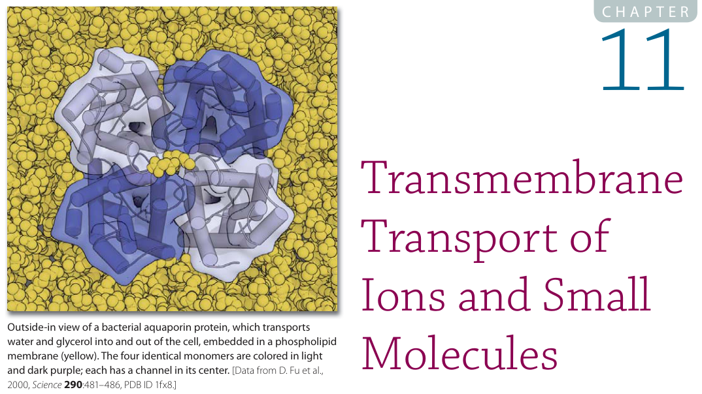
在所有细胞中，质膜构成一道屏障，把细胞质与外部环境分隔开，从而界定出细胞的物理边界与化学边界。质膜阻止分子和离子不受阻碍地进出细胞，从而维持着细胞外液与细胞质在组成上的根本差异。例如，动物血液和细胞外液中氯化钠（NaCl）的浓度一般高于150 mM，与海水中约450 mM的Na+相似——一般认为所有细胞都是在海水中演化而来。相比之下，细胞质中钠离子（Na+）的浓度要低十倍，约为15 mM；而钾离子（K+）的浓度则是细胞质内高于细胞外。
细胞器膜把细胞质与细胞器内部分隔开，同样构成通透性屏障。例如，溶酶体内部的质子浓度（pH 5）比细胞质高约一百倍；许多特定代谢物在内质网、高尔基复合体等其他细胞器内部的积累浓度也高于细胞质。
所有细胞膜，无论质膜还是细胞器膜，都由磷脂双分子层构成，其中镶嵌着其他脂质和特定类型的蛋白质。正是脂质与蛋白质的这种组合，赋予了细胞膜独特的通透性质。如果细胞膜只是纯磷脂双分子层（见图10-4），那它们将是极好的化学屏障，对几乎所有离子、氨基酸、糖类和其他水溶性分子都不通透。事实上，只有少数几种气体和小型不带电的水溶性分子能够轻易扩散通过纯磷脂双分子层（图11-1）。但细胞膜不仅必须充当屏障，还必须充当通道，选择性地把分子和离子从膜的一侧转运到另一侧。例如，富含能量的葡萄糖必须被输入细胞，而废物必须被运出细胞。
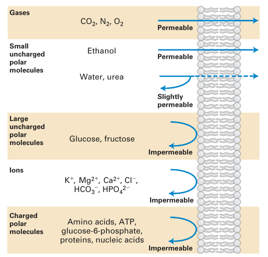
| Permeable | 可通透 |
| Slightly permeable | 轻微通透 |
| Impermeable | 不通透 |
| Gases | 气体 |
| Small uncharged polar molecules | 小的不带电极性分子 |
| Water, urea | 水、尿素 |
| Ethanol | 乙醇 |
| Glucose, fructose | 葡萄糖、果糖 |
| Ions | 离子 |
| Charged polar molecules | 带电极性分子 |
| Large uncharged polar molecules | 大的不带电极性分子 |
| Amino acids, ATP, glucose-6-phosphate, proteins, nucleic acids | 氨基酸、ATP、葡糖-6-磷酸、蛋白质、核酸 |
几乎所有小分子和离子跨越细胞膜的移动，都由膜转运蛋白介导——这类整合膜蛋白含有多个镶嵌在细胞膜中的跨膜结构域。这些跨膜蛋白分别充当穿梭体、通道或泵，把分子和离子运送穿过膜内疏水的内部。在某些情况下，分子或离子从高浓度一侧被转运到低浓度一侧，这是热力学上有利的过程，由熵增驱动。例如水或葡萄糖从血液转运进入大多数体细胞。在另一些情况下，分子或离子必须从低浓度一侧被"泵"到高浓度一侧，这是热力学上不利的过程，只有在有外部能源推动分子逆浓度梯度"上坡"移动时才能发生。溶酶体内质子的浓缩从而在腔内形成低pH，就是这样一个例子。所需的能量常常来自ATP末端磷酸酐键水解所释放的能量与分子或离子跨膜移动之间的机械偶联。另一些蛋白质把一种分子或离子逆其浓度梯度的移动，与另一种分子或离子的顺梯度移动偶联起来，利用一种分子或离子"下坡"移动所释放的能量，驱动另一种分子或离子"上坡"移动。任何细胞的正常功能，都依赖于各种分子和离子的输入与输出之间的精确平衡。
我们讨论膜转运蛋白，先从回顾跨膜转运的一些一般原理入手，并区分这类蛋白质的三大类。在随后各节中，我们将描述每一类的具体实例的结构与工作方式，并说明同源转运蛋白家族的成员如何具有不同的性质，使不同细胞类型得以恰当地行使功能。我们还将解释，质膜与细胞器膜中转运蛋白的特定组合，如何使细胞完成必需的生理过程，包括维持细胞质pH、在植物细胞液泡中积累蔗糖和盐类，以及在植物和动物中引导水的流向。细胞的静息膜电位是离子选择性跨膜转运的重要结果，我们也会讨论这一电位是如何产生的。上皮细胞（例如衬在小肠的那些）利用多种膜转运蛋白的组合，把离子、糖类和其他小分子以及水从细胞的一侧转运到另一侧。我们将看到，对这一过程的理解如何促成了运动饮料的开发，以及霍乱和其他腹泻疾病的疗法。
请注意，本章只讨论小分子和离子的转运；蛋白质和寡糖等较大分子的转运见第13章和第14章。
11.1 跨膜转运概述
在本节中，我们先描述影响脂膜通透性的因素，然后简要介绍使分子和离子得以穿膜的三类主要膜转运蛋白。不同类型的膜内在蛋白以不同方式完成移动分子和离子的任务。
只有气体和不带电的小分子通过简单扩散跨膜
磷脂双分子层的疏水核心很致密，因此对水溶性分子和离子基本不通透。只有O2、CO2等气体，以及尿素、乙醇等小型不带电的极性分子，能够轻易穿过由纯磷脂或磷脂加胆固醇构成的人工膜（见图11-1）。这类分子也不需要转运蛋白的帮助就能扩散通过细胞膜。简单扩散不消耗代谢能，因为分子的移动是从高浓度到低浓度，即顺其化学浓度梯度。正如第2章所指出的，这类移动是自发的，因为它们的ΔS为正值（熵增），因而ΔG为负（自由能降低）。
任何物质穿过纯磷脂双分子层的扩散速率，与它跨双分子层的浓度梯度成正比，也与它的疏水性和大小有关；而带电分子的移动还受跨膜电位的影响。当纯磷脂双分子层把两个水相空间（即"隔室"）分隔开时，只要向一个隔室加入少量标记物，测定它在另一隔室中出现的速率，就能方便地测出膜的通透性。标记物可以是放射性的，也可以是非放射性的——例如发光强度可以测定的荧光标记。物质的浓度梯度越大，它跨双分子层移动的速率就越快。
物质的疏水性通过测定其分配系数K来确定，K是它在油与水之间分配的平衡常数。物质的分配系数越高（即相对于水，分布在油中的比例越大），脂溶性就越强，因而跨双分子层移动的速率也越快。简单扩散转运的第一步、也是限速的一步，是分子从水溶液进入磷脂双分子层的疏水内部——后者在化学性质上类似橄榄油。这就是分子越疏水，穿过纯磷脂双分子层扩散越快的原因。例如，每个氮原子上连有一个乙基的二乙基脲：其K为0.01；而尿素的K为0.0002。二乙基脲的疏水性是尿素的50倍（0.01/0.0002），因此它穿过纯磷脂双分子层扩散的速率约为尿素的50倍。同样，烃链较长的脂肪酸比烃链较短的更疏水，因此在任何浓度下都更快地扩散通过纯磷脂双分子层。
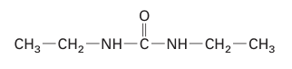
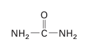
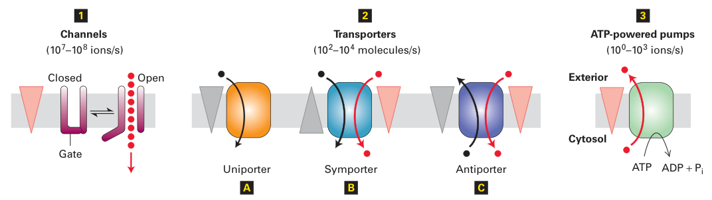
| Channels | 通道 |
| Transporters | 转运体 |
| Uniporter | 单向转运体 |
| Symporter | 同向转运体 |
| Antiporter | 反向转运体 |
| ATP-powered pumps | ATP驱动的泵 |
| Gate | 闸门 |
| Open | 开放 |
| Closed | 关闭 |
| Exterior | 外侧 |
| Cytosol | 细胞质 |
如果一种物质带有净电荷，它跨膜移动就同时受其浓度梯度和膜电位（即跨膜的电位差，也就是电压）的影响。这两种力的组合称为电化学梯度，它决定了带电分子跨膜移动在能量上有利的方向。大多数细胞膜两侧之所以存在电位差，是因为膜两侧带正电和带负电的离子浓度有轻微的不平衡。这种离子不平衡以及由此产生的电位是如何形成并维持的，我们将在11.4节和11.5节讨论。
三类主要膜蛋白把分子和离子转运跨细胞膜
从图11-1可以明显看出，能够以可观速率简单扩散通过纯磷脂双分子层的分子极少，离子则完全没有。因此，大多数分子进出细胞都需要专门膜蛋白的协助。即便对于分配系数较大的分子（如尿素、脂肪酸）以及CO2（二氧化碳）、NH3（氨）等某些气体，转运也常常由特定蛋白质加速，因为简单扩散的速度往往不足以满足细胞的需要。
所有膜转运蛋白都是跨膜蛋白，含有多个一般为α螺旋的跨膜区段。转运蛋白在膜上形成一条由蛋白质衬里的通路，人们认为这使亲水性物质能够穿过膜而不与膜的疏水内部接触。下面我们介绍本章所涵盖的三类主要膜转运蛋白（图11-2）。
通道顺其浓度梯度或电位梯度，把水、特定离子或亲水性小分子转运穿过膜。由于这一过程需要转运蛋白但不消耗能量，有时被称为被动转运或易化扩散，但更准确的叫法是易化转运。通道在膜上形成一条亲水性的"管道"或通路，多个水分子或离子以单列方式同时、极快地从中穿过。有些通道大部分时间都处于开放状态，称为非门控通道。然而大多数离子通道只在响应特定的化学或电信号时才开放。这些通道称为门控通道，因为有一个蛋白质"门"交替地堵塞通道或移开而把通道打开（见图11-2）。通道与所有转运蛋白一样，对所转运的分子类型具有很强的选择性。
转运体（也称载体）把多种多样的离子和分子转运跨细胞膜，但速率比通道慢得多。目前已鉴定出三种类型的转运体。单向转运体把单一类型的分子顺其浓度梯度转运。葡萄糖和氨基酸就是借助单向转运体穿过质膜进入大多数哺乳动物细胞的。通道和单向转运体合起来有时被称为易化转运体，表示两者都是顺浓度梯度或电化学梯度移动。
相反，反向转运体和同向转运体把一种离子或分子逆其浓度梯度的移动，与一种或多种其他离子顺其浓度梯度的移动偶联起来，两者的方向相同（同向转运体）或相反（反向转运体）。由于这些蛋白质能同时转运两种或更多种不同的溶质，通常被称为协同转运体。
ATP驱动的泵（简称泵）是一类ATP酶，它们利用ATP水解的能量，把离子或小分子逆化学浓度梯度、逆电位差或同时逆两者转运跨膜。这一过程称为主动转运，是偶联化学反应的一个例子（见第2章）。在这里，离子或小分子逆电化学梯度"上坡"移动（需要能量）与ATP水解（释放能量）相偶联。整个反应——ATP水解加上离子或小分子的"上坡"移动——在能量上是有利的。
与协同转运体一样，泵也介导偶联反应，即把一个能量上不利的反应（某种分子或离子的"上坡"移动）与一个能量上有利的反应（另一种分子的"下坡"移动）偶联起来。但请注意，驱动这两类蛋白质进行主动转运的供能反应在性质上并不相同。ATP泵利用ATP水解提供的能量，而协同转运体利用储存在电化学梯度中的能量。后一过程有时被称为次级主动转运。
构象变化对所有转运蛋白的功能都必不可少。ATP驱动的泵和转运体经历一个构象变化循环：在一种构象下把结合位点暴露给膜的一侧，在第二种构象下暴露给膜的另一侧。由于每一次这样的循环只转运一个底物分子（至多几个），这类蛋白质的转运速率相对较慢，为每秒1到10000个离子或分子（见图11-2）。大多数离子通道在关闭状态与开放状态之间转换，但许多离子可以通过开放的通道而无需任何进一步的构象变化。因此，通道的转运速率极快，每秒可达1亿个离子。
常常有几种不同类型的转运蛋白协同工作，以完成某一生理功能。图11-3即是一例：一种ATP酶把Na+泵出细胞、把K+泵入细胞；这种泵几乎存在于所有后生动物细胞中，它在质膜两侧建立起方向相反的Na+和K+浓度梯度（细胞内K+浓度较高，细胞外Na+浓度较高），这些梯度被用来驱动氨基酸的输入。人类基因组编码数百种不同类型的转运蛋白，它们利用储存在质膜两侧Na+浓度梯度及其相关电位中的能量，把多种多样的分子逆其浓度梯度转运进入细胞。
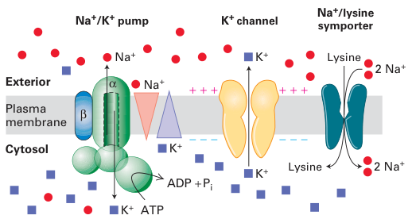
| Plasma membrane | 质膜 |
| Na+/K+ pump | Na+/K+泵 |
| Na+/lysine symporter | Na+/赖氨酸同向转运体 |
| K+ channel | K+通道 |
| Lysine | 赖氨酸 |
| Exterior | 外侧 |
| Cytosol | 细胞质 |
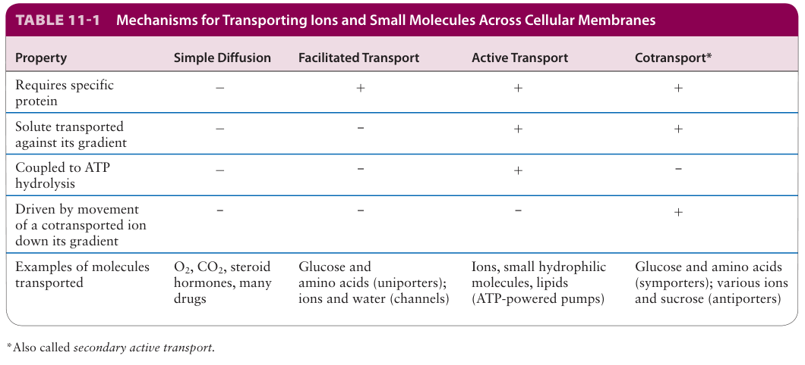
| Property | 性质 |
| Simple Diffusion | 简单扩散 |
| Facilitated Transport | 易化转运 |
| Active Transport | 主动转运 |
| Cotransport | 协同转运 |
| Requires specific protein | 需要特定蛋白 |
| Solute transported against its gradient | 溶质逆其梯度转运 |
| Coupled to ATP hydrolysis | 与ATP水解偶联 |
| Driven by movement of a cotransported ion down its gradient | 由协同转运的离子顺其梯度移动所驱动 |
| Examples of molecules transported | 所转运分子的例子 |
| Also called secondary active transport | 又称继发性主动转运 |
表11-1总结了小分子和离子跨细胞膜转运的四种机制。下一节我们讨论一些最简单的膜转运蛋白，即负责转运葡萄糖和水的那些。
- 细胞膜调控分子和离子进出细胞及其细胞器的流量。物质跨膜简单扩散的速率与其浓度梯度和疏水性成正比。
- 除气体（如O2和CO2）以及小型不带电的水溶性分子之外，大多数分子以简单扩散穿过纯磷脂双分子层的速率不足以满足细胞的需要。
- 膜转运蛋白为分子和离子穿过膜的疏水内部提供了一条亲水性通路。
- 三类跨膜蛋白介导离子、糖类、氨基酸和其他代谢物跨细胞膜的转运：通道、转运体和ATP驱动的泵（见图11-2）。
- 通道形成一条亲水性"管道"，水或离子顺浓度梯度从中通过，这一过程称为易化转运。
- 转运体分为三组。单向转运体把分子顺其浓度梯度转运（易化转运）；同向转运体和反向转运体把底物逆其浓度梯度的移动与第二种底物顺其浓度梯度的移动偶联起来，这一过程称为次级主动转运或协同转运（见表11-1）。
- ATP驱动的泵把底物逆其浓度梯度的移动与ATP水解偶联起来，这一过程称为主动转运。
- 构象变化对所有膜转运蛋白的功能都必不可少；转运速度取决于单位时间内能通过一个蛋白质的底物分子或离子数目。
11.2 葡萄糖和水的易化转运
大多数动物细胞以葡萄糖为底物生产ATP，它们通常用葡萄糖单向转运体从血液或其他细胞外液中摄取葡萄糖。许多细胞使用称为水通道蛋白的通道样膜转运蛋白，来提高水跨质膜移动的速率。这里我们讨论这些转运体以及其他易化转运体的结构与功能。
单向转运比简单扩散更快、更专一
由蛋白质介导的、单一类型分子（如葡萄糖或其他小型亲水分子）顺浓度梯度跨细胞膜的转运，称为单向转运。单向转运与简单扩散有几方面区别：1. 单向转运体转运底物的速率远高于通过纯磷脂双分子层的简单扩散。
2. 由于被转运的分子从不进入磷脂双分子层的疏水核心，其分配系数K无关紧要。
3. 转运通过数量有限的单向转运体分子完成。因此存在一个最大转运速率Vmax，它取决于膜上单向转运体的数目。当跨膜浓度梯度很大、且每个单向转运体都以最大速率工作时，就达到Vmax。
4. 转运是可逆的；如果浓度梯度的方向改变，转运方向也会随之改变。
5. 转运具有专一性。每种单向转运体只转运单一类型的分子或一组密切相关的分子。衡量转运体对其底物亲和力的指标是米氏常数Km，即转运速率为最大速率一半（Vmax的一半）时的底物浓度。
这些性质同样适用于图11-2中其他各类蛋白质所介导的转运。
目前了解得最清楚的单向转运体之一，是大多数哺乳动物细胞质膜中的葡萄糖转运体GLUT1。GLUT1在红细胞（erythrocyte）质膜中尤其丰富。由于红细胞只有一层膜，没有细胞核或其他内部细胞器（见图7-7a），分离和纯化其质膜转运蛋白相对简单。因此，GLUT1以及来自成熟红细胞的许多其他转运蛋白的性质得到了广泛研究。此外，人GLUT1的三维结构于2014年被解出，为GLUT1功能的细节提供了更多分子层面的认识。
图11-4显示，红细胞和肝细胞摄取葡萄糖的动力学，与涉及单一底物的简单酶促反应相似。其他类型蛋白质介导的转运反应，其动力学比单向转运体更为复杂。尽管如此，所有由蛋白质协助的转运反应都比跨双分子层的简单扩散更快、具有底物专一性，并表现出最大速率（Vmax）。
GLUT1单向转运体的低Km值使它能把葡萄糖转运进大多数哺乳动物细胞
与其他单向转运体一样，GLUT1在两种构象状态之间交替：在一种构象中，葡萄糖结合位点朝向细胞外侧；在另一种构象中，葡萄糖结合位点朝向细胞质。后一种构象已在较高分辨率下解出，如图11-5a所示。由于葡萄糖浓度在细胞外介质（就红细胞而言即血液）中通常高于细胞内，GLUT1单向转运体一般催化葡萄糖从细胞外介质净输入细胞。图11-5b描绘了葡萄糖经一种称为交替通路模型的机制、从细胞外侧单向转运进入细胞质的系列事件；请注意在此过程中若干跨膜α螺旋发生的构象变化。当细胞内葡萄糖浓度高于细胞外时，GLUT1也能催化葡萄糖从细胞质净输出到细胞外介质。
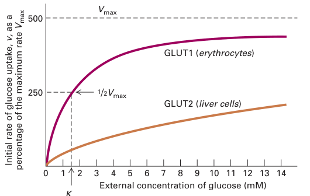
| Initial rate of glucose uptake | 葡萄糖摄取初速率 |
| External concentration of glucose (mM) | 细胞外葡萄糖浓度（mM） |
| Vmax | 最大速率Vmax |
| GLUT1 (erythrocytes) | GLUT1（红细胞） |
| GLUT2 (liver cells) | GLUT2（肝细胞） |
葡萄糖通过GLUT1从细胞外侧向内单向转运的动力学，可以用描述简单酶促化学反应的同一类方程来描述。为简化起见，假定底物（葡萄糖）S最初只存在于细胞外侧；这可以通过先把细胞在缺乏葡萄糖的培养基中孵育、使其内部储备耗尽来实现。在这种情况下，我们可以写出式中Sout−GLUT1代表朝外构象、且结合了一个葡萄糖的GLUT1。这一方程与描述简单酶促反应路径的方程相似——在那类反应中，蛋白质结合单一底物后把它转变为另一种分子。但在这里，与GLUT1结合的葡萄糖分子并没有发生化学修饰，它只是被移动跨过了细胞膜。
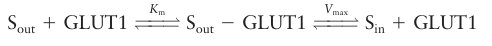
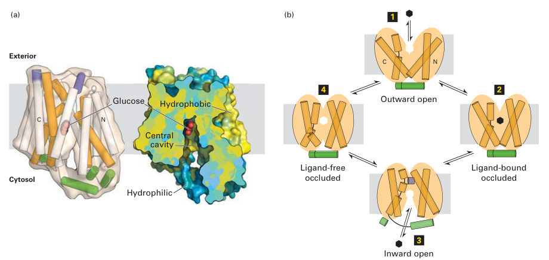
| Glucose | 葡萄糖 |
| Central cavity | 中央腔 |
| Hydrophilic | 亲水 |
| Hydrophobic | 疏水 |
| Outward open | 朝外开放构象 |
| Inward open | 朝内开放构象 |
| Ligand-free occluded | 无配体封闭构象 |
| Ligand-bound occluded | 配体结合封闭构象 |
| Exterior | 外侧 |
| Cytosol | 细胞质 |
尽管如此，这一转运反应的动力学与简单酶促反应相似，我们可以用第3章推导米氏方程时所用的同一套推导，得出下列v0的表达式——v0是GLUT1催化S进入细胞的初始转运速率：
式中C是Sout的浓度（初始时Sin的浓度＝0）。Vmax是所有GLUT1分子都结合了S时的转运速率，在Sout浓度无限高时达到。Km值越低，底物与转运体结合得越紧密。方程11-1既描述了图11-4中红细胞摄取葡萄糖的曲线，也描述了其他单向转运体的类似曲线。
人红细胞膜中GLUT1转运葡萄糖的Km为1.5 mM。因此当细胞外葡萄糖浓度为1.5 mM时，约有一半结合位点朝外的GLUT1转运体结合了葡萄糖，转运以最大速率的50%进行。血糖正常为5 mM，所以红细胞葡萄糖转运体通常以其最大速率的77%工作，这从方程11-1可以看出。GLUT1转运体（或与之非常相似的GLUT3葡萄糖转运体）在所有需要持续、高速率从血液中摄取葡萄糖的身体细胞中表达。无论血糖浓度如何小幅变化，这类细胞摄取葡萄糖的速率都保持很高，因为血液浓度始终远高于Km，而细胞内葡萄糖浓度被代谢维持在低水平。
除葡萄糖外，GLUT1还能以可测量的速率转运同分异构糖d-甘露糖和d-半乳糖——它们与d-葡萄糖的差别仅在于一个碳原子上的构型。然而，葡萄糖的Km（1.5 mM）远低于d-甘露糖（20 mM）或d-半乳糖（30 mM）的Km。因此GLUT1相当专一，它对其正常底物d-葡萄糖的亲和力（以较低的Km表示）远高于对其他底物的亲和力。
GLUT1占红细胞质膜蛋白质的2%。葡萄糖被转运进红细胞后迅速被磷酸化，形成葡萄糖-6-磷酸，后者不能离开细胞。由于这一反应（葡萄糖代谢的第一步，见图12-3）迅速且以恒定速率进行，即使葡萄糖不断从细胞外输入，细胞内葡萄糖浓度也保持在低水平。因此，葡萄糖的浓度梯度（细胞外高于细胞内）得以维持在足够高的水平，支持更多葡萄糖分子持续、快速地输入，并为细胞代谢提供充足的葡萄糖。
人类基因组编码一个糖转运GLUT蛋白家族
人类基因组编码至少14种高度同源的GLUT蛋白，即GLUT1～GLUT14，它们被认为都含有12个跨膜α螺旋，提示它们是由同一个祖先转运蛋白演化而来的。在人GLUT1蛋白中，跨膜α螺旋以疏水性为主；不过有几个螺旋带有氨基酸残基（如丝氨酸、苏氨酸、天冬酰胺和谷氨酰胺），其侧链能与葡萄糖上的羟基形成氢键。这些残基被认为在蛋白质内部构成了朝内和朝外的葡萄糖结合位点（见图11-5）。
所有GLUT同种型（isoform）的结构被认为相当相似，而且它们都转运糖。尽管如此，它们在不同细胞类型中的差异表达、其细胞表面数目的调控，以及各同种型特有的功能性质，使不同的身体细胞能以不同方式调节葡萄糖代谢，同时又使血液中的葡萄糖浓度得以保持恒定。例如，GLUT3存在于脑的神经元中。神经元依赖葡萄糖的持续流入来进行代谢，而GLUT3对葡萄糖的低Km值（1.5 mM）与GLUT1一样，确保这些细胞能以高而恒定的速率从脑细胞外液摄取葡萄糖。
GLUT2在肝细胞和胰腺中分泌胰岛素的β胰岛细胞中表达，其Km约为20 mM，比GLUT1的Km高约13倍。因此，当餐后血糖从基础水平5 mM升至10 mM左右时，表达GLUT2的细胞中葡萄糖流入速率几乎翻倍，而表达GLUT1的细胞中只略微升高（见图11-4）。在肝脏中，被运入细胞的"过量"葡萄糖以多糖糖原的形式储存。在β胰岛细胞中，葡萄糖升高触发激素胰岛素的分泌（见图16-39），胰岛素又通过增加肌肉的葡萄糖摄取与代谢、并抑制肝脏的葡萄糖生成来降低血糖（见图15-37）。事实上，在胰腺β胰岛细胞中使GLUT2失活，会阻止葡萄糖刺激的胰岛素分泌，并扰乱肝细胞（hepatocyte）中葡萄糖敏感基因的受调控表达。
另一种GLUT同种型GLUT4只在脂肪细胞和肌肉细胞中表达，这些细胞响应胰岛素而增加葡萄糖摄取，从而把葡萄糖从血液中清除。在没有胰岛素时，GLUT4驻留在细胞内膜系中而非质膜上，无法促进从细胞外液摄取葡萄糖。胰岛素通过图16-40详述的过程，使这些富含GLUT4的内膜与质膜融合，增加细胞表面GLUT4分子的数目，从而提高葡萄糖摄取速率。这是胰岛素降低血糖的主要机制之一；GLUT4向质膜移动的缺陷，是成年发病型（II型）糖尿病的病因之一，这种疾病以血糖持续偏高为特征。
GLUT5是唯一对果糖具有高度特异性（偏好性）的GLUT蛋白；它的主要表达部位是肠上皮细胞的顶端膜，在那里把膳食果糖从肠腔转运到细胞内部。
转运蛋白可用人工膜和重组细胞来研究
研究转运蛋白的内在性质（如Vmax与Km参数，以及负责结合的关键残基）有多种方法。大多数细胞膜含有许多不同类型的转运蛋白，但每一种的浓度都相对较低，这使单个蛋白的功能研究变得困难。为便于这类研究，研究人员采用两种方法富集感兴趣的转运蛋白，使其在膜中占优势：纯化后插入人工膜，以及在重组细胞中过表达。
第一种方法是用去垢剂把特定的转运蛋白从其膜上提取出来并纯化。虽然转运蛋白可以从膜上分离并纯化，但只有与膜结合时才能研究其功能性质（即它们在底物跨膜移动中的作用）。因此，纯化的蛋白通常被重新掺入纯磷脂双分子层膜（如脂质体，见图7-3）中，这样就可以方便地测定底物的跨膜转运。GLUT1的一个良好来源是红细胞膜；另一个来源是表达GLUT1转基因的重组培养哺乳动物细胞，该转基因往往编码一种改造过的GLUT1，其N端或C端融合了一个表位标签［一种可被单克隆抗体（见第4章）结合的分子片段］。这两类细胞中的所有整合膜蛋白，都可以用非离子型去垢剂（如辛基葡糖苷）提取，这种去垢剂能溶解膜而不会使膜蛋白显著变性。葡萄糖单向转运体GLUT1可用抗体亲和层析（见第3章）从溶解后的混合物中纯化——使用装有GLUT1特异性单克隆抗体或表位标签特异性抗体的层析柱，然后掺入由纯磷脂制成的脂质体中。
另一种方法是在通常不表达某种转运蛋白的细胞类型中高水平表达编码该蛋白的基因。转染细胞与对照未转染细胞对某物质转运速率的差异，就归因于所表达的那种转运蛋白。在这些系统中，可以毫无歧义地检验各种膜蛋白的功能性质，不会受到诸如分离纯化过程中蛋白部分变性这类因素的干扰。举例来说，在培养的成纤维细胞系中过表达GLUT1，可使其摄取葡萄糖的速率提高数倍；而表达带有特定氨基酸改变的突变GLUT1蛋白，则可以鉴定出对底物结合重要的残基。
渗透压使水跨膜移动
水进出细胞是所有生物生命活动的一个重要特征。水通道蛋白是一个膜蛋白家族，它们让水以及少数其他小型不带电分子（如甘油）高效地跨细胞膜移动。但在讨论这些转运蛋白之前，我们需要先回顾渗透作用——驱动水跨膜移动的力。
水自发地跨半透膜"下坡"移动，从溶质浓度较低（水浓度相对较高）的溶液流向溶质浓度较高（水浓度相对较低）的溶液，这一过程称为渗透作用或渗透流。实际上，渗透作用相当于水跨半透膜的"扩散"。渗透压被定义为阻止水跨膜净流动所需的水静压，该膜把水浓度不同的两种溶液隔开（图11-6）。换句话说，渗透压平衡了水浓度梯度这一熵驱动的热力学力。在这里，"膜"可以是一层细胞，也可以是一个对水通透、但对其所含溶质不通透的质膜。渗透压与膜两侧溶质分子总浓度的差值成正比。例如，0.5 M NaCl溶液实际上是0.5 M Na+离子和0.5 M Cl−离子，其渗透压与1 M葡萄糖或蔗糖溶液相同。
水跨质膜的移动决定单个细胞的体积，而体积必须受到调控以避免细胞受损。细胞外渗透条件的微小变化，就会使大多数动物细胞迅速膨胀或皱缩。当置于低渗溶液（即不能穿透膜的溶质浓度低于细胞质的溶液）中时，动物细胞因水向内渗透流入而膨胀。
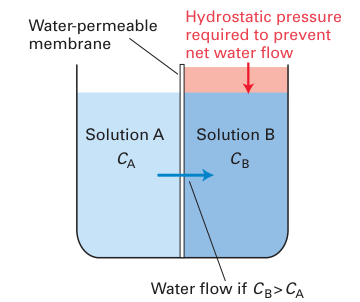
| Solution A | 溶液A |
| Solution B | 溶液B |
| Water-permeable membrane | 水可透膜 |
| Water flow | 水流 |
| Hydrostatic pressure required to prevent net water flow | 阻止净水流所需的静水压 |
反之，当置于高渗溶液（即不能穿透膜的溶质浓度高于细胞质的溶液）中时，动物细胞因细胞质中的水经渗透流离开细胞而皱缩。因此，培养的动物细胞必须维持在等渗培养基中——其溶质浓度（因而渗透强度）与细胞质相似。
在维管植物中，水和矿物质由根从土壤中吸收，并经导管（木质部）向上运输；植物主要经由叶片蒸发而散失的水分，驱动着这一运动。与动物细胞不同，植物、藻类、真菌和细菌细胞外面包着一层坚硬的细胞壁，当细胞内渗透压升高时，细胞壁抵抗细胞体积的膨胀。没有这样的壁，动物细胞在内部渗透压升高时就会膨胀；如果压力升得过高，细胞就会像充气过度的气球一样爆裂。由于有细胞壁，植物细胞置于低渗溶液（甚至纯水）中时所发生的渗透性进水，会导致细胞内压力升高，但细胞体积并不增大。
在植物细胞中，液泡（见图1-12a）内的溶质（如糖和盐）浓度通常高于细胞质，而细胞质的溶质浓度又高于细胞外空间。水进入细胞质、继而进入液泡所产生的渗透压称为膨压，它把细胞质和质膜推向坚韧的细胞壁。植物细胞可以利用这种压力来帮助自己挺立和生长。生长过程中的细胞伸长，是通过激素诱导细胞壁某一限定区域局部松弛，随后水流入液泡、使液泡增大从而细胞增大来实现的。■
虽然大多数原生动物（与动物细胞一样）没有坚硬的细胞壁，但许多原生动物含有一个收缩泡，使它们得以避免渗透性裂解。收缩泡从细胞质中收集水，并且与植物液泡不同，它会周期性地通过与质膜融合把内容物排出细胞。因此，即使水不断经渗透流进入原生动物细胞，收缩泡也能防止过多水在细胞中积累，把细胞胀到破裂的程度。
水通道蛋白提高细胞膜的水通透性
水由于渗透压而跨细胞膜流动的自然倾向，引出一个显而易见的问题：为什么淡水动物的细胞在水中不会胀破？例如，青蛙把卵产在池水中，（低渗溶液），但蛙的卵母细胞和卵即使在内部盐浓度（主要为KCl）与其他细胞相当（约150 mM KCl）时也不会因吸水而膨胀。这些观察结果首次使研究者怀疑，大多数细胞类型（但不是蛙卵母细胞）的质膜中含有能加速水渗透流的水通道蛋白。
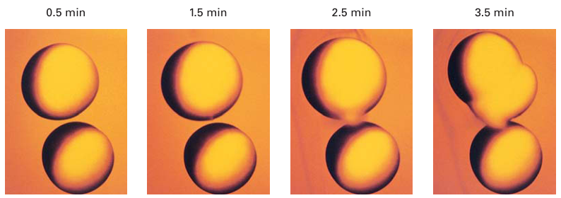
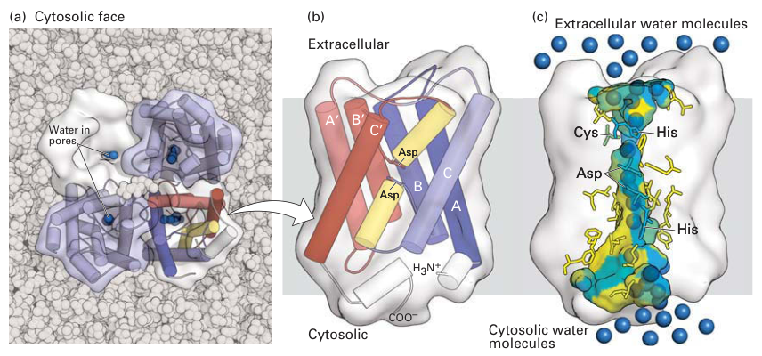
| Water pores | 水孔 |
| Extracellular water molecules | 细胞外水分子 |
| Cytosolic water molecules | 细胞质水分子 |
| Asp | 天冬氨酸 |
| Cys | 半胱氨酸 |
| His | 组氨酸 |
| Cytosolic face | 胞质面 |
图11-7所示的实验结果证明，来自红细胞质膜的水通道蛋白确实起水通道的作用。
在其有功能的形式中，水通道蛋白是由相同的28 kDa亚基组成的四聚体（图11-8a）。每个亚基含有六个跨膜α螺旋，它们围成一条中央孔道，水可以依渗透梯度的方向从中双向通过（图11-8b、c）。每个单体中央那条长约2 nm的择水通道（孔道）直径仅0.28 nm——只比水分子直径略大。通道的分子筛性质，由几个保守的亲水性氨基酸残基（其侧链和羰基伸入通道中部）以及衬在通道一侧的相对疏水的壁共同决定。若干水分子可以同时通过这条通道，每个分子依次与衬在通道上的氨基酸形成特定的氢键，并把下游的另一个水分子顶开。水通道蛋白在水转运过程中不发生构象变化，因此它们转运水的速度比GLUT1转运葡萄糖快若干数量级。水的氧原子与两个氨基酸侧链的氨基之间形成氢键，确保只有不带电的水（即H2O，而非H3O+）能通过通道；通道中水分子的取向阻止质子从一个水分子跳到下一个，从而阻止质子净穿过通道。因此，即使水正通过水通道蛋白跨膜流动，离子梯度仍得以维持。
哺乳动物表达一个水通道蛋白家族；人类已知有11个这样的基因。水通道蛋白1在红细胞中大量表达，而同源的水通道蛋白2存在于从尿液中重吸收水的肾上皮细胞中，从而控制体内的水量。水通道蛋白2的活性受加压素（vasopressin，又称抗利尿激素）调节，其方式类似于脂肪和肌肉中GLUT4活性的调节。当细胞处于静息状态、水被排出以形成尿液时，水通道蛋白2被隔离在细胞内的囊泡膜中，因此无法介导水进入细胞。当多肽激素加压素与细胞表面的加压素受体结合时，它激活一条以cAMP为细胞内信号的信号通路（详见第15章），使这些含水通道蛋白2的囊泡与质膜融合，从而提高水的摄取速率并使其返回循环。加压素受体基因或水通道蛋白2基因的失活突变都会引起尿崩症，这种疾病以排出大量稀释尿液为特征。这一发现表明，水通道蛋白2的水平对肾脏从正在形成的尿液中重吸收水而言是限速因素。■
水通道蛋白家族的其他成员转运含羟基的分子（如甘油）而不是水。例如，人水通道蛋白3转运甘油，其氨基酸序列和结构与大肠杆菌的甘油转运蛋白GlpF相似。
- 由蛋白质催化的生物溶质跨膜转运，比简单扩散快得多；当数量有限的转运体分子被底物饱和时表现出最大速率Vmax，并且对底物高度专一（见图11-4）。
- 单向转运蛋白（如葡萄糖转运体GLUT）被认为在两种构象状态之间穿梭：一种状态下底物结合位点朝外，另一种状态下结合位点朝内（见图11-5）。
- GLUT蛋白家族的所有成员都转运糖，且结构相似。它们Km值的差异、在不同细胞类型中的表达以及底物特异性，对体内正常的糖代谢都很重要。
- 研究转运蛋白功能的两种常用实验系统是：含纯化转运蛋白的脂质体，以及转染了编码某种转运蛋白基因的细胞。
- 大多数细胞膜是半透性的，对水的通透性高于对离子或大多数其他溶质的通透性。水通过渗透作用跨膜移动，从溶质浓度较低的溶液流向溶质浓度较高的溶液。
- 植物细胞周围坚硬的细胞壁阻止其膨胀，并在水渗透性流入时导致膨压的产生。
- 水通道蛋白是特异性地增加细胞膜对水通透性的通道蛋白（见图11-8）。
- 某些肾细胞质膜中的水通道蛋白2，对从正在形成的尿液中重吸收水是必需的；水通道蛋白2的缺失会导致尿崩症。
11.3 ATP驱动的泵与细胞内离子环境
在前几节中，我们关注的是使分子顺其浓度梯度移动的转运蛋白（易化转运）。这里我们把注意力转向另一类蛋白——ATP驱动的泵，它们利用ATP末端磷酸酐键水解所释放的能量，把离子和多种小分子逆其浓度梯度转运跨膜。
所有ATP驱动的泵都是跨膜蛋白，其面向细胞质一侧的亚基或区段上带有一个或多个ATP结合位点。这些蛋白是ATP酶，但除非同时转运离子或其他分子，它们通常并不把ATP水解为ADP和Pi。由于ATP水解与转运之间的这种紧密偶联，磷酸酐键中储存的能量不会以热的形式耗散，而是用于使离子或其他分子逆电化学梯度"上坡"移动。
四类主要的ATP驱动泵
图11-9描绘了四类ATP驱动泵的一般结构，图中下方列出了每一类的具体例子。请注意，其中三类（P类、F类和V类）的成员只转运离子，第四类即ABC超家族的一些成员也是如此。然而，ABC超家族的大多数成员转运小分子，如氨基酸、糖类、肽、脂质以及许多类型的药物。
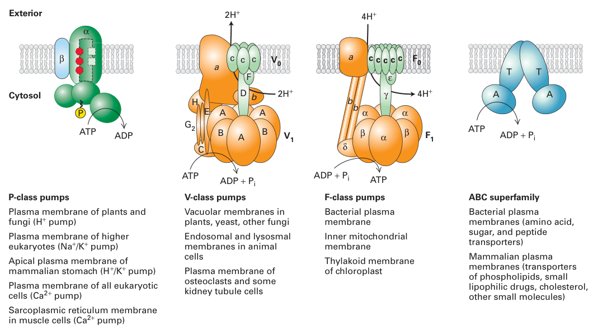
| Plasma membrane of plants and fungi (H+ pump) | 植物和真菌质膜（H+泵） |
| Plasma membrane of higher eukaryotes (Na+/K+ pump) | 高等真核生物质膜（Na+/K+泵） |
| Apical plasma membrane of mammalian stomach (H+/K+ pump) | 哺乳动物胃的顶端质膜（H+/K+泵） |
| Plasma membrane of all eukaryotic cells (Ca2+ pump) | 所有真核细胞的质膜（Ca2+泵） |
| Sarcoplasmic reticulum membrane in muscle cells (Ca2+ pump) | 肌细胞肌质网膜（Ca2+泵） |
| Bacterial plasma membrane | 细菌质膜 |
| Inner mitochondrial membrane | 线粒体内膜 |
| Thylakoid membrane of chloroplast | 叶绿体类囊体膜 |
| Vacuolar membranes in plants, yeast, other fungi | 植物、酵母和其他真菌的液泡膜 |
| Endosomal and lysosomal membranes in animal cells | 动物细胞的内体膜和溶酶体膜 |
| Plasma membrane of osteoclasts and some kidney tubule cells | 破骨细胞和部分肾小管细胞的质膜 |
| Mammalian plasma membranes (transporters of phospholipids, small lipophilic drugs, cholesterol, other small molecules) | 哺乳动物质膜（磷脂、小的脂溶性药物、胆固醇及其他小分子的转运体） |
所有P类泵都具有两个相同的催化α亚基，每个亚基含一个ATP结合位点。大多数P类泵还有两个较小的β亚基，它们通常具有调节功能。在转运过程中，至少有一个α亚基被磷酸化（"P"类由此得名），被转运的离子则穿过这个被磷酸化的亚基。不同泵中被磷酸化残基周围的氨基酸序列是同源的。这一类包括质膜中的Na+/K+ ATP酶，它产生动物细胞典型的低细胞质Na+、高细胞质K+浓度（见图11-3）。某些Ca2+ ATP酶把Ca2+离子从细胞质泵到外部介质中；另一些则把Ca2+从细胞质泵入内质网，或泵入肌肉细胞中称为肌质网的特化的内质网。P类的另一个成员存在于哺乳动物胃的泌酸细胞中，它把质子（H+离子）泵出细胞、把K+离子泵入细胞。
V类和F类泵的结构彼此相似，但与P类泵的结构无关，且比后者更复杂。V类和F类泵含有几种不同的跨膜亚基和细胞质亚基。几乎所有已知的V类和F类泵都只转运质子，其过程不涉及磷酸化蛋白中间体。V类泵通常把质子逆质子电化学梯度从膜的胞质面泵到外质面，从而产生植物液泡以及动物细胞中溶酶体和其他酸性囊泡的低pH。相反，在植物、真菌和许多细菌细胞中产生并维持质膜电位的质子泵，属于P类泵。
F类泵存在于细菌质膜以及线粒体和叶绿体中。与V类泵相反，它们通常作为反向质子泵发挥作用：质子顺质子电化学梯度从膜的细胞外侧流向胞质面所释放的能量，被用来驱动由ADP和Pi合成ATP这一能量上不利的反应。由于F类质子泵在叶绿体和线粒体的ATP合成中至关重要，它们通常被称为ATP合酶，将在第12章（细胞能量学）中单独讨论。
最后一类ATP驱动泵是一个成员众多的大蛋白家族，其功能比其他几类更为多样。这一类被称为ABC（ATP结合盒）超家族，包含从细菌到人类的各种生物中发现的数百种不同转运蛋白。如下文详述，其中一些转运蛋白最初是作为多药耐药蛋白被鉴定出来的：它们在癌细胞中过表达时会把抗癌药物泵出细胞，使肿瘤对药物的作用产生抗性。每种ABC蛋白对单一底物或一组相关底物具有特异性，底物可以是离子、糖类、氨基酸、磷脂、胆固醇、肽、多糖甚至蛋白质。所有ABC膜转运蛋白都具有相同的结构组织，由四个"核心"结构域组成：两个跨膜（T）结构域，它们构成被转运分子穿膜而过的通路；以及两个位于细胞质的ATP结合（A）结构域。在一些ABC蛋白中（主要是细菌的），核心结构域以四条独立多肽的形式存在；在另一些中，核心结构域融合成一条或两条多结构域多肽。在大多数ABC膜转运蛋白中，ATP结合与水解驱动转运过程。不过，ATP结合与水解的能量也可以用来调控一条连续通道的开闭，如下文对囊性纤维化跨膜传导调节蛋白（CFTR）的描述。
ATP驱动的离子泵产生并维持跨细胞膜的离子梯度
细胞质特有的离子组成通常与周围细胞外液相差很大。在几乎所有细胞中——包括微生物、植物和动物细胞——无论细胞外pH如何，细胞质pH都保持在7.2左右。在最极端的例子中，衬在胃内的上皮细胞的细胞质与餐后胃内容物之间的H+浓度相差100万倍。
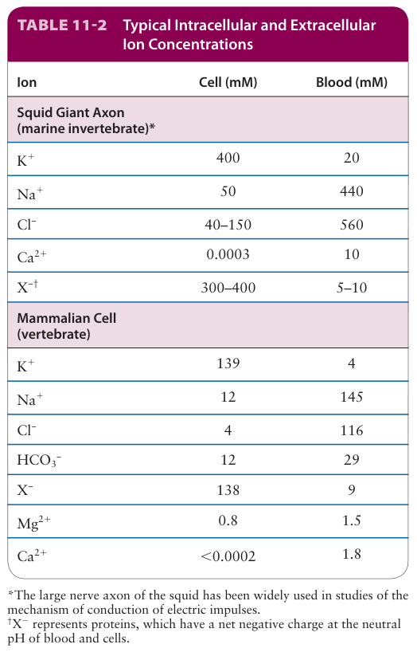
| Ion | 离子 |
| Cell (mM) | 细胞（mM） |
| Blood (mM) | 血液（mM） |
| Squid Giant Axon (marine invertebrate) | 枪乌贼巨轴突（海洋无脊椎动物） |
| Mammalian Cell (vertebrate) | 哺乳动物细胞（脊椎动物） |
此外，细胞质中K+浓度远高于Na+。在无脊椎动物和脊椎动物中，细胞质K+浓度比血液中高20～40倍，而细胞质Na+浓度比血液中低8～12倍（表11-2）。
细胞质中的一部分Ca2+与ATP以及蛋白质和其他分子上的带负电基团结合，但对其在信号通路和肌肉收缩中的功能起关键作用的，是未结合（即"游离"）Ca2+的浓度。细胞质中游离Ca2+的浓度一般低于0.2微摩尔（2 × 10⁻⁷ M），比血液中低一千倍以上。植物细胞和许多微生物即使在盐浓度极低的溶液中培养，也维持着同样高的细胞质K+浓度以及低Ca2+、低Na+浓度。
本节讨论的离子泵，在很大程度上负责建立并维持通常的离子梯度。为完成这一任务，细胞消耗相当多的能量。例如，神经细胞和肾细胞产生的ATP中，多达25%用于离子转运；人红细胞则把可获得的ATP中多达50%用于这一目的；这两种情况下，这些ATP大部分用于驱动Na+/K+泵（见图11-3）。神经元中由此产生的Na+和K+梯度，对于它们快速高效地传导电信号至关重要，我们将在第22章详述。所有细胞中蛋白质合成所需的某些酶需要高K+浓度，并受高浓度Na+的抑制；如果没有Na+/K+泵的工作，这些酶将停止发挥功能。在用抑制ATP产生的毒物（如有氧细胞中的2,4-二硝基苯酚）处理细胞时，泵送停止，细胞内的离子浓度逐渐接近外部环境，因为离子会顺其电化学梯度自发地通过质膜上的通道。最终被处理的细胞死亡，部分原因是蛋白质合成需要高浓度K+离子，部分原因是当质膜两侧不存在Na+梯度时，细胞无法输入某些营养物质（如氨基酸，见图11-3）。对此类毒物效应的研究，为离子泵的存在和重要性提供了早期证据。
肌肉舒张依赖把Ca2+从细胞质泵入肌质网的Ca2+ ATP酶
在骨骼肌细胞中，Ca2+离子被浓缩并储存在肌质网（SR）——一种特化的内质网（ER）——中。如第17章所述，储存于SR腔中的Ca2+离子经离子通道释放进入细胞质会引起肌肉收缩。位于SR膜上的一种P类Ca2+ ATP酶把Ca2+从细胞质泵回SR腔，从而引起肌肉舒张。
在肌肉细胞的细胞质中，游离Ca2+浓度在10⁻⁷ M（静息细胞）到10⁻⁶ M以上（收缩细胞）之间变化，而SR腔中Ca2+的总浓度可高达10⁻² M。SR腔中含有两种含量丰富的蛋白质：钙螯合蛋白（calsequestrin）和所谓的高亲和力Ca2+结合蛋白，它们各自以高亲和力结合多个Ca2+离子。通过与SR腔中大部分Ca2+结合，这些蛋白降低了SR囊泡中"游离"Ca2+离子的浓度。这种降低又减小了细胞质与SR腔之间的Ca2+浓度梯度，从而减少把Ca2+离子从细胞质泵入SR所需的能量。肌肉Ca2+ ATP酶的活性随细胞质中游离Ca2+浓度升高而增强。在骨骼肌细胞中，SR膜上的钙泵与质膜上一种类似的Ca2+泵协同工作，确保静息肌肉中细胞质的游离Ca2+浓度保持在0.1 μM以下。
Ca2+泵的作用机制已被详细了解
由于钙泵占肌肉SR膜中整合膜蛋白的80%以上，它易于纯化并得到了广泛研究。测定该蛋白在代表泵送过程不同步骤的几种构象状态下的三维结构，揭示了大量关于其作用机制的信息，这一机制也成为理解许多P类ATP酶的范例。
目前关于SR膜中Ca2+ ATP酶作用机制的模型涉及多种构象状态。为简化起见，我们把这些状态归为两类：E1状态——位于跨膜结构域中央的两个Ca2+结合位点朝向细胞质；以及E2状态——这些结合位点朝向膜的外质面，即指向SR腔。ATP水解与离子泵送的偶联涉及蛋白质中若干必须按特定顺序发生的构象变化，如图11-10所示。当蛋白质处于E1构象时，两个Ca2+离子与两个可从细胞质一侧接近的高亲和力结合位点结合；即使细胞质Ca2+浓度很低（见表11-2），钙离子仍能占满这些位点。
接着，一个ATP与细胞质表面的一个位点结合（步骤1）。结合的ATP在需要Mg2+的反应中水解为ADP，释放出的磷酸基被转移至蛋白质中一个特定的天冬氨酸残基上，形成用E1~P表示的高能酰基磷酸键（步骤2）。随后蛋白质发生构象变化，生成E2；在E2中，两个Ca2+结合位点的亲和力降低（详见下一张图），并且这些位点现在可通向SR腔（步骤3）。E1~P中天冬氨酰-磷酸键水解的自由能大于E2–P中的相应值，可以说正是天冬氨酰-磷酸键自由能的这一降低，驱动了E1 → E2的构象变化。
Ca2+离子自发地从结合位点解离而进入SR腔，因为尽管那里的Ca2+浓度高于细胞质，却仍低于低亲和力状态下Ca2+结合的Kd（步骤4）。最后，天冬氨酰-磷酸键被水解（步骤5）。这一去磷酸化，连同随后细胞质Ca2+与高亲和力E1 Ca2+结合位点的结合，使E1构象状态相对于E2更为稳定；此外，可以说它驱动了E2 → E1的构象变化（步骤6）。此时E1又准备好转运另外两个Ca2+离子。循环至此完成，ATP中一个磷酸酐键的水解驱动了两个Ca2+离子逆浓度梯度泵入SR腔。
大量结构和生物物理证据支持图11-10所描绘的模型。例如，肌肉钙泵已被分离出磷酸与关键天冬氨酸残基相连的形式；光谱学研究已检测到在E1 → E2转变过程中蛋白质构象的细微改变。两种磷酸化状态也可以在生化上加以区分：向磷酸化的E1中加入ADP会导致ATP合成，即图11-10中步骤2的逆反应，而向磷酸化的E2中加入ADP则不会。反应循环的每一个主要构象状态，还可以通过其对胰蛋白酶等多种蛋白水解酶的敏感性不同来表征。
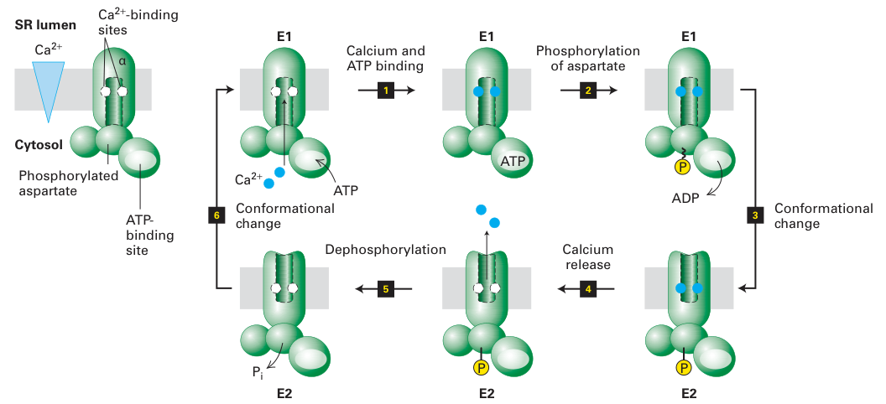
| Calcium and ATP binding | 钙与ATP结合 |
| Ca2+-binding sites | Ca2+结合位点 |
| Phosphorylated aspartate | 磷酸化天冬氨酸 |
| ATP-binding site | ATP结合位点 |
| SR lumen | 肌质网腔 |
| E1 | E1状态 |
| E2 | E2状态 |
| Cytosol | 细胞质 |
| Phosphorylation of aspartate | 天冬氨酸的磷酸化 |
| Conformational change | 构象变化 |
| Dephosphorylation | 去磷酸化 |
| Calcium release | 钙释放 |
图11-11显示了E1状态下Ca2+泵的三维结构。从图11-11c可见，催化亚基中的10个跨膜α螺旋构成了Ca2+离子穿过的通路。其中四个螺旋中的氨基酸构成了两个高亲和力的E1 Ca2+结合位点（图11-11a左）。一个位点由谷氨酸和天冬氨酸侧链羧基（COO−）上带负电的氧原子以及结合的水分子构成；另一个位点由侧链和主链的氧原子构成。因此，当Ca2+离子与Ca2+泵结合时，它们失去了在水溶液中通常围绕Ca2+离子的水分子（见图2-7），但这些水分子被转运蛋白中几何排布相似的氧原子所取代。相反，在E2状态中（图11-11a右），其中几个结合侧链移动了不到1纳米的距离，无法再与结合的Ca2+离子相互作用，这正是E2状态对Ca2+离子亲和力低的原因。
Ca2+离子与Ca2+泵的结合，说明了离子与膜转运蛋白结合的一条一般原理，本章中我们会反复遇到：离子结合时失去大部分水合水，但与转运蛋白中几何排布与水溶液中结合于其上的水氧原子相似的氧原子相互作用。这降低了离子与蛋白结合的热力学障碍，使离子即使从浓度相对较低的溶液中也能被紧密结合。
Ca2+泵的细胞质区域由三个结构域组成，在E1状态下它们彼此充分分开（图11-11b）。每个结构域都通过短的氨基酸片段与跨膜螺旋相连。泵送循环中这些细胞质结构域的运动，引起连接片段运动，进而传递为相连跨膜α螺旋的运动。例如，被磷酸化的残基Asp 351位于磷酸化（P）结构域中。ATP的腺苷部分与核苷酸结合（N）结构域结合，但ATP的γ磷酸与P结构域上的特定残基结合，这需要N和P两个结构域运动。因此，在ATP与Ca2+结合之后，所结合ATP的γ磷酸就紧邻P结构域上将要接受磷酸的天冬氨酸。尽管这些以及其他蛋白质构象变化的精确细节尚不清楚，N和P结构域的运动通过连接片段的杠杆式运动，传递为若干跨膜α螺旋的重排。
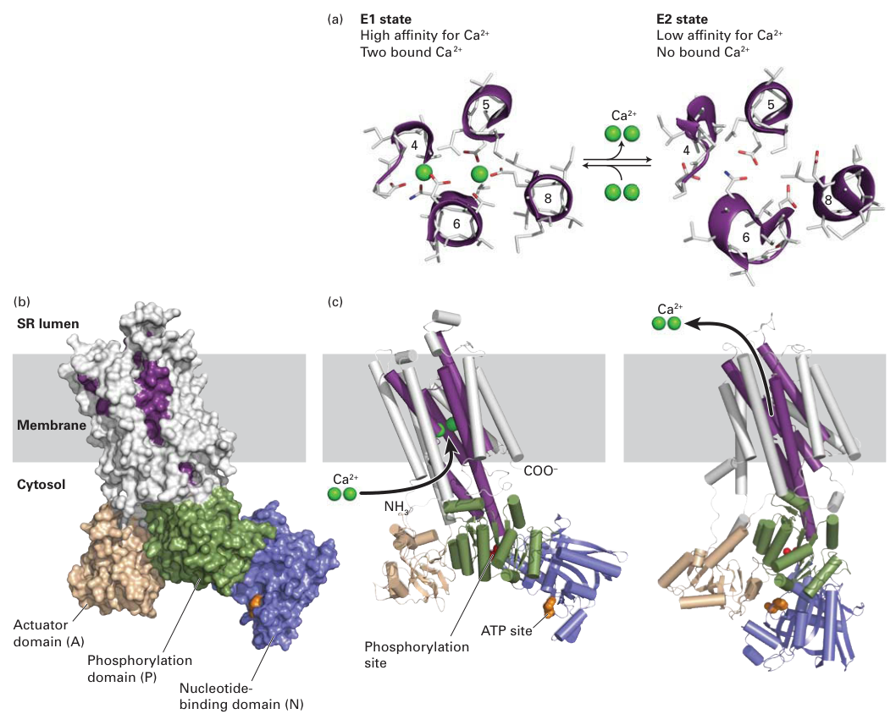
| E1 state | E1状态 |
| High affinity for Ca2+ | 对Ca2+高亲和力 |
| Two bound Ca2+ | 两个结合的Ca2+ |
| E2 state | E2状态 |
| Low affinity for Ca2+ | 对Ca2+低亲和力 |
| No bound Ca2+ | 无结合的Ca2+ |
| Phosphorylation domain (P) | 磷酸化结构域（P） |
| Nucleotide-binding domain (N) | 核苷酸结合结构域（N） |
| Actuator domain (A) | 执行结构域（A） |
| ATP site | ATP位点 |
| SR lumen | 肌质网腔 |
| Cytosol | 细胞质 |
这些变化在含有两个Ca2+结合位点的四个螺旋中尤为明显：这些变化阻止已结合的Ca2+离子在释放后回到细胞质，却使它们能够解离进入外质空间（腔）。
所有P类ATP驱动泵，无论转运哪种离子，在转运过程中都会在一个高度保守的天冬氨酸残基上被磷酸化。
由cDNA序列推断，迄今研究过的所有P类泵的催化α亚基都具有相似的氨基酸序列，因此被认为具有相似的跨膜α螺旋排布，以及面向细胞质的A（执行器，actuator）、P、N三个结构域（见图11-11）。这些发现有力地提示，所有这类蛋白都由一个共同前体演化而来，尽管它们现在转运不同的离子。这一推论得到以下事实的支持：Na+/K+ ATP酶与Ca2+泵跨膜区段的三维结构相似（图11-12）；它们的三个细胞质结构域的分子结构也非常相似。因此，图11-11中的工作机制模型普遍适用于所有P类ATP驱动泵。
钙调蛋白调节控制细胞质Ca2+浓度的质膜泵
正如我们在第15章所解释的，在肌肉细胞和许多其他类型的细胞中，细胞质中游离Ca2+离子浓度的小幅升高会触发多种细胞反应。为使Ca2+能在细胞内信号传导中发挥作用，细胞质中游离Ca2+离子的浓度通常必须保持在0.1～0.2 μM以下。动物、酵母以及很可能还有植物细胞，都表达把Ca2+逆其电化学梯度运出细胞的质膜Ca2+ ATP酶。这些P类泵的催化α亚基，在结构和序列上与肌肉SR Ca2+泵的相似。
质膜Ca2+ ATP酶的活性受钙调蛋白（calmodulin）——一种细胞质Ca2+结合蛋白——的调节（见图3-33）。细胞质Ca2+升高会诱导Ca2+离子与钙调蛋白结合，从而激活Ca2+ ATP酶。结果是Ca2+离子从细胞中输出加速，迅速恢复静息细胞特有的低细胞质游离Ca2+浓度。
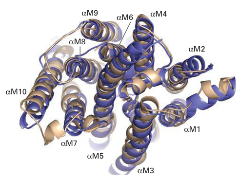
Na+/K+ ATP酶维持动物细胞内的Na+和K+浓度
所有动物细胞质膜中都存在的一种重要的P类泵是Na+/K+ ATP酶。这种离子泵是亚基组成为α2β2的四聚体，与Ca2+泵在结构上同源（见图11-12）。那个小的、被糖基化的β跨膜多肽显然不直接参与离子泵送。在其催化循环中，Na+/K+ ATP酶每水解一分子ATP，就把三个Na+离子移出细胞、把两个K+离子移入细胞。Na+/K+ ATP酶的作用机制（图11-13概述）与肌肉SR钙泵相似，不同之处在于离子跨膜向两个方向泵送，且每种离子都逆其浓度梯度移动。
在E1构象中，Na+/K+ ATP酶有三个可从蛋白质细胞质表面接近的高亲和力Na+结合位点，以及两个低亲和力K+结合位点。Na+与这些细胞质位点结合的Km为0.6 mM，远低于细胞内约12 mM的Na+浓度；因此Na+离子通常占满这些位点。反过来，细胞质K+结合位点的亲和力足够低，以至于向内转运通过该蛋白的K+离子会从E1上解离并进入细胞质，尽管细胞内K+浓度很高。在E1 → E2转变过程中，三个已结合的Na+离子得以接近外质面，同时三个Na+结合位点的亲和力下降。现在结合在低亲和力Na+位点上的三个Na+离子逐个解离并进入细胞外介质，尽管细胞外Na+浓度很高。向E2构象的转变还会产生两个可从外质面接近的高亲和力K+位点。由于K+与这些位点结合的Km（0.2 mM）低于细胞外K+浓度（4 mM），随着Na+离子解离，这些位点将被K+离子占据。类似地，在随后的E2 → E1转变中，两个已结合的K+离子被向内转运，随后释放到细胞质中。
某些药物（如哇巴因和地高辛）与质膜Na+/K+ ATP酶的外质结构域结合，并特异性地抑制其ATP酶活性。由此造成的细胞Na+/K+平衡紊乱，有力证明了这种离子泵在维持正常K+和Na+离子浓度梯度中的关键作用。经典实验11-1描述了这一重要离子泵的发现，它是生命所必需的。
V类H+ ATP酶维持溶酶体和液泡的酸性
所有V类ATP酶都只转运H+离子。这些质子泵存在于溶酶体、内体和植物液泡的膜上，其功能是酸化这些细胞器的腔。溶酶体腔的pH可以在活细胞中用带pH敏感荧光染料的颗粒精确测定。当把这些颗粒加入细胞外液时，细胞会吞噬并内化它们（吞噬作用；见图1-18和第17章），最终把它们运送到溶酶体中。溶酶体pH可以根据所发射荧光的谱来计算。
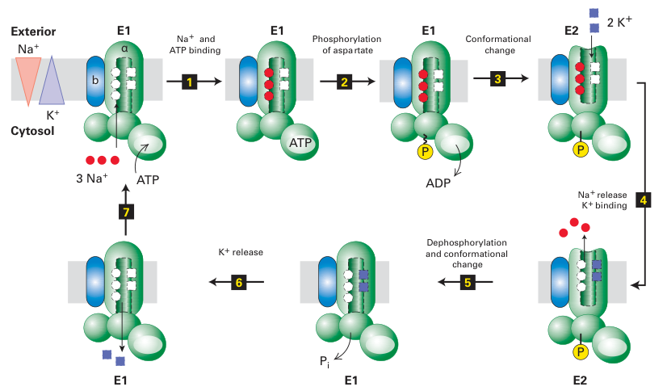
| E1 | E1状态 |
| E2 | E2状态 |
| 3 Na+ | 3个Na+ |
| 2 K+ | 2个K+ |
| ATP binding | ATP结合 |
| Phosphorylation of aspartate | 天冬氨酸的磷酸化 |
| Na+ release | Na+释放 |
| K+ binding | K+结合 |
| Conformational change | 构象变化 |
| Dephosphorylation | 去磷酸化 |
| K+ release | K+释放 |
| Cytosol | 细胞质 |
| Exterior | 外侧 |
编码一种荧光依赖于pH的天然荧光蛋白的DNA可以被改造（通过添加编码"信号序列"的DNA片段，详见第13章和第14章），使该蛋白被定向到溶酶体腔；随后就可以用荧光测定来确定细胞器腔内的pH。溶酶体腔（pH约4.5～5.0）与细胞质（pH约7.0）之间100倍以上的质子梯度的维持，依赖于一种V类ATP酶，因而也依赖于细胞的ATP产生。低溶酶体pH是腔内许多蛋白酶、核酸酶和其他水解酶发挥最佳功能所必需的；另一方面，细胞质pH若为5，会破坏许多最适于在pH 7下发挥作用的蛋白质的功能，导致细胞死亡。
酸化一个细胞内囊泡只需泵入相对很少的质子。要理解原因，请回忆pH 4的溶液其H+离子浓度为每升10⁻⁴摩尔，即每毫升10⁻⁷摩尔H+离子。每摩尔有6.02 × 10²³个H原子（阿伏伽德罗常数），所以1毫升pH 4溶液含有6.02 × 10¹⁶个H+离子。因此在pH 4时，一个体积为4.18 × 10⁻¹⁵毫升（直径0.2 μm）的初级球形溶酶体只含有252个质子。在pH 7时，同一细胞器腔内平均只有0.2个质子，因此溶酶体酸化只需泵入约250个质子。
V类质子泵本身无法酸化细胞器腔（或细胞外空间），因为这些泵是生电的，即转运过程中发生净电荷移动。仅泵入少量质子就会在细胞器膜的外质（内侧）面造成带正电的H+积累。每泵过一个H+，就会有一个负离子（如OH−或Cl−）被"留在"胞质面，造成那里负电荷积累。这些带相反电荷的离子在膜的两面相互吸引，产生跨膜的电荷分离，即电位。因此溶酶体膜就像电路中的电容器，在不透带电粒子的屏障两侧储存相反的电荷（阴离子和阳离子）。
随着越来越多的质子被泵入、在外质面积累过量正电荷，逆着这一不断升高的电位梯度移动更多质子所需的能量急剧增加，远在建立起显著的跨膜H+浓度梯度之前就阻止了进一步泵入质子（图11-14a）。事实上，植物和酵母质膜上的P类质子泵正是以这种方式产生胞质为负的电位。
要使细胞器腔或细胞外空间（如胃腔）变酸，质子的移动必须伴随：(1) 等量阴离子（如Cl−）同向移动，或 (2) 等量另一种阳离子反向移动。第一种过程发生在溶酶体和植物液泡中，它们的膜上含有V类H+ ATP酶和阴离子通道，伴随的Cl−离子经这些通道移动（图11-14b）。第二种过程发生在胃的内衬，那里含有一种不生电的P类H+/K+ ATP酶，它把一个H+泵出、一个K+泵入。这种泵的工作将在本章后文讨论。
溶酶体膜和液泡膜中的V类质子泵已被溶解、纯化并掺入脂质体。如图11-9所示，这些泵含有两个彼此分离的结构域：一个细胞质亲水结构域（V1）和一个跨膜结构域（V0），每个结构域由多个亚基组成。V1中B亚基对ATP的结合与水解，为H+离子通过V0中c亚基和a亚基构成的质子传导通道提供能量。与P类离子泵不同，V类质子泵在质子转运过程中不被磷酸化和去磷酸化。
ABC蛋白把多种多样的药物和毒素输出细胞
如前所述，膜转运蛋白中这个庞大而多样的ABC超家族的所有成员，都含有两个跨膜（T）结构域和两个细胞质ATP结合（A）结构域（见图11-9）。每个T结构域由10个跨膜α螺旋构成，它们形成被转运物质（底物）穿膜而过的通路，并决定每种ABC蛋白的底物特异性。
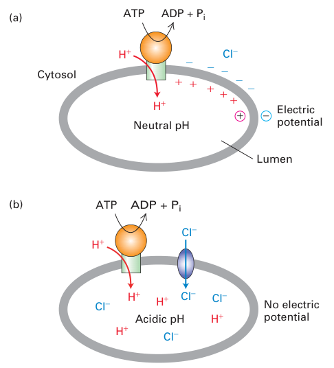
| Neutral pH | 中性pH |
| Acidic pH | 酸性pH |
| No electric potential | 无电位 |
| Electric potential | 电位 |
| Lumen | 腔 |
| Cytosol | 细胞质 |
| Cl− channel | Cl−通道 |
该超家族所有成员中A结构域的序列约有30%～40%同源，表明它们有共同的演化起源。
第一个被认识的真核ABC蛋白，是在研究对几种化学结构互不相关的药物表现出抗性的肿瘤细胞和培养细胞时发现的。这些细胞最终被证明表达了水平升高的多药耐药（MDR）转运蛋白，它最初被称为MDR1，现在称为ABCB1。这种蛋白利用ATP水解产生的能量，把多种多样的药物从细胞质输出到细胞外介质。在多药耐药细胞中，Mdr1基因常被扩增，导致MDR1蛋白大量过量产生。与由四条独立亚基构成的细菌ABC蛋白不同，哺乳动物ABCB1的全部四个结构域融合为一条170 kDa的蛋白。
哺乳动物ABCB1的底物主要是带一个或多个正电荷的平面脂溶性分子；它们彼此竞争转运，提示它们结合在蛋白上相同或重叠的位点。许多由ABCB1转运的药物无需转运蛋白协助，就从细胞外介质扩散穿过质膜进入细胞质，在那里阻断各种细胞功能。两种这样的药物是秋水仙素和长春碱，它们阻断微管的组装（见第18章）。MDR1以ATP为动力把这些药物输出，降低了它们在细胞质中的浓度。结果是，要杀死表达ABCB1的细胞，所需的细胞外药物浓度远高于不表达ABCB1的细胞。含纯化蛋白的脂质体实验已证明ABCB1是一种以ATP为动力的小分子泵。不同药物以与其被ABCB1转运能力相对应的剂量依赖方式，增强这些脂质体的ATP酶活性。
ABCB1的三维结构，连同同源的细菌ABC蛋白的结构，揭示了该蛋白的转运机制，以及它结合并转运多种亲水和疏水底物的能力（见图11-15）。两个T结构域在膜中央形成一个结合位点，该位点在朝内（图11-15b）与朝外（图11-15c）两种取向上交替，符合交替通路模型。这两种构象状态之间的交替由ATP结合到两个A亚基、随后水解为ADP和Pi来驱动，但具体如何发生尚不清楚。
ABCB1形成的底物结合腔很大。腔内壁上的部分氨基酸——主要是酪氨酸和苯丙氨酸——带有芳香族侧链，使ABCB1能结合多种类型的疏水配体。腔内其他区段则衬有亲水性残基，使亲水或两亲性分子得以结合。在朝内构象中，结合位点直接向周围水溶液开放，使亲水分子能直接进入结合位点（即直接从细胞质进入）。
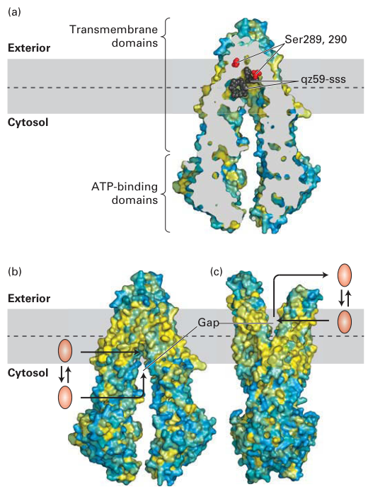
| Ser289, 290 | 丝氨酸289、290 |
| Gap | 缺口 |
| Transmembrane domains | 跨膜结构域 |
| ATP-binding domains | ATP结合结构域 |
| Cytosol | 细胞质 |
| Exterior | 外侧 |
此外，蛋白质上的一个缺口可直接从膜双分子层内层小叶的疏水核心接近；这使疏水分子能直接从内层小叶进入结合位点（见图11-15b）。在ATP驱动的向朝外构象转变之后，分子可以从结合位点进入膜的外层小叶，或直接进入细胞外介质（见图11-15c）。
目前已认识约50种不同的哺乳动物ABC蛋白（表11-3）。在真核细胞中，ABC蛋白不仅定位在质膜上，也定位在许多细胞器膜上。有几种在肝、肠和肾中大量表达——这些部位负责把天然的毒性产物和废物排出体外。
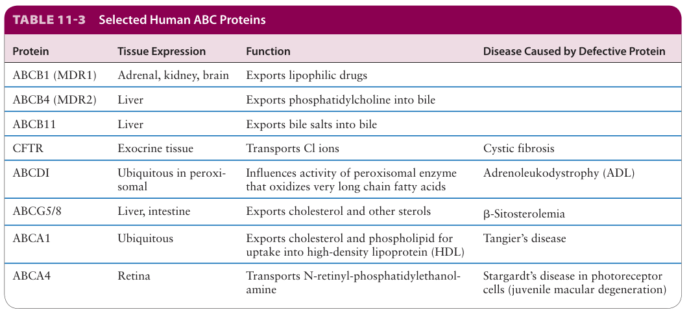
| Protein | 蛋白质 |
| Tissue Expression | 组织表达 |
| Function | 功能 |
| Disease Caused by Defective Protein | 蛋白缺陷引起的疾病 |
| Adrenal, kidney, brain | 肾上腺、肾、脑 |
| Exports lipophilic drugs | 输出脂溶性药物 |
| Liver | 肝 |
| Exports phosphatidylcholine into bile | 把磷脂酰胆碱输出进胆汁 |
| Exports bile salts into bile | 把胆盐输出进胆汁 |
| CFTR | CFTR（囊性纤维化跨膜传导调节因子） |
| Exocrine tissue | 外分泌组织 |
| Transports Cl− ions | 转运Cl−离子 |
| Cystic fibrosis | 囊性纤维化 |
| Ubiquitous | 普遍存在 |
| Exports cholesterol and phospholipid for uptake into high-density lipoprotein (HDL) | 输出胆固醇和磷脂供高密度脂蛋白（HDL）摄取 |
| Tangier's disease | 丹吉尔病 |
| Retina | 视网膜 |
| Stargardt's disease in photoreceptor cells (juvenile macular degeneration) | 光感受器细胞的斯塔加特病（青少年黄斑变性） |
这些ABC蛋白的底物包括糖类、氨基酸、胆固醇、胆汁酸、磷脂、肽、蛋白质、毒素和外来物质。ABCB1的正常功能很可能是把各种天然毒素和代谢毒素转运进胆汁或肠腔以便排出，或转运进肾脏正在形成的尿液中。在其演化过程中，ABCB1似乎获得了转运那些结构与这些内源毒素相似的药物的能力。来源于表达MDR的细胞类型的肿瘤，如肝细胞瘤（肝癌），往往对几乎所有化疗药物都耐药，因而难以治疗，推测是因为这些肿瘤中ABCB1或相关ABC蛋白的表达增高。
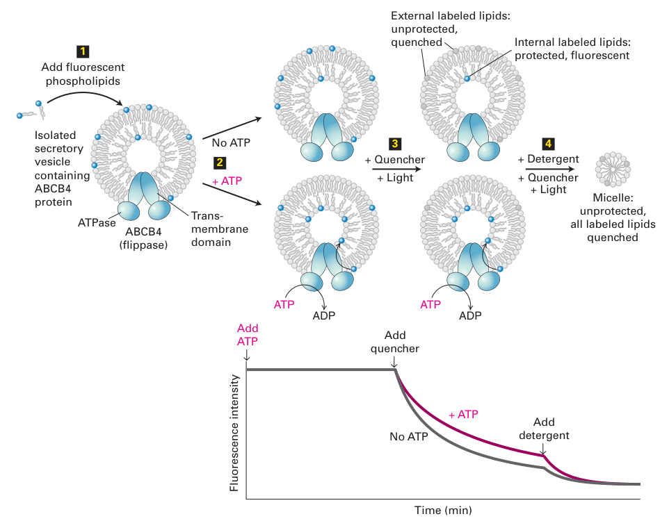
| Isolated secretory vesicle containing ABCB4 protein (flippase) | 含ABCB4蛋白（翻转酶）的分离分泌囊泡 |
| Transmembrane domain | 跨膜结构域 |
| ATPase | ATP酶 |
| Add fluorescent lipids | 加入荧光脂质 |
| Add ATP | 加入ATP |
| Add quencher | 加入淬灭剂 |
| No ATP | 无ATP |
| + Quencher | + 淬灭剂 |
| + Detergent | + 去垢剂 |
| External labeled lipids: unprotected, quenched | 外部标记脂质：未受保护，被淬灭 |
| Internal labeled lipids: protected, fluorescent | 内部标记脂质：受保护，发荧光 |
| Micelle: all labeled lipids | 胶束：所有标记脂质 |
| Fluorescence intensity | 荧光强度 |
| Time (min) | 时间（分） |
某些ABC蛋白把磷脂和其他脂溶性底物从膜的一侧小叶"翻转"到另一侧
如图11-15的(b)和(c)部分所示，ABCB1能把疏水或两亲性底物分子从膜的内层小叶移动或"翻转"到外层小叶。这一在其他情况下能量上不利的反应，由该蛋白的ATP酶活性驱动。支持ABCB1这种所谓翻转酶转运模型的证据来自对ABCB4（原称MDR2）的实验——它是与ABCB1同源的蛋白，存在于肝细胞质膜朝向胆小管的区域。ABCB4把磷脂酰胆碱从质膜的胞质小叶翻到外质小叶，以便随后与胆固醇和胆汁酸一起释放进胆汁；胆固醇和胆汁酸本身由ABC超家族的其他成员转运。还有别的ABC超家族成员参与各种脂质的细胞输出，推测其机制与ABCB1相似（见表11-3）。
ABCB4最初被怀疑具有磷脂翻转酶活性，是因为ABCB4基因功能丧失纯合突变的小鼠在向胆汁分泌磷脂酰胆碱方面存在缺陷。为直接确定ABCB4是否真是翻转酶，研究人员对从特殊突变酵母细胞中分离出的一群均一囊泡进行了实验——这些酵母细胞膜上带有ABCB4，且其胞质面朝外（图11-16）。纯化这些囊泡后，研究者在体外用荧光磷脂酰胆碱衍生物对它们进行标记。图11-16所示的荧光淬灭测定表明，含ABCB4的囊泡表现出ATP依赖的翻转酶活性。
ABC家族的囊性纤维化跨膜传导调节蛋白是氯离子通道，不是泵
若干人类遗传病与ABC蛋白缺陷有关（见表11-3）。研究最充分、分布最广的是囊性纤维化（CF），它由编码囊性纤维化跨膜传导调节蛋白（CFTR，又称ABCC7）的基因突变引起。与其他ABC蛋白一样，CFTR有两个跨膜T结构域和两个细胞质A（即ATP结合）结构域。CFTR在胞质面还多一个R（调节）结构域；R连接蛋白的两个同源半部，使总体结构域组织为T1–A1–R–T2–A2。但CFTR是一个Cl−通道，而不是泵。它表达在肺、汗腺、胰腺和其他组织上皮细胞的顶端质膜上。例如，CFTR蛋白对汗腺细胞重吸收随汗液丢失的Cl−很重要；患囊性纤维化的婴儿若被舔一下，尝起来常常是"咸的"，因为这种重吸收受到抑制。
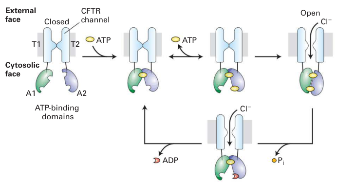
| T1 | 跨膜结构域T1 |
| T2 | 跨膜结构域T2 |
| A1 | ATP结合结构域A1 |
| A2 | ATP结合结构域A2 |
| Closed | 关闭 |
| Open | 开放 |
| CFTR channel | CFTR通道 |
| Cytosolic face | 胞质面 |
| External | 外侧 |
CFTR的Cl−通道正常情况下是关闭的。通道开放由蛋白激酶（PKA，见第15章）对R结构域的磷酸化所激活，而PKA又由细胞内小分子信号物质环腺苷酸（cAMP）的升高激活。通道开放还需要两个ATP分子依次结合到两个A结构域上（图11-17）。
约三分之二的CF病例可归因于CFTR中的单个突变：ATP结合A1结构域中Phe 508的缺失。在体温下，这种突变蛋白无法正确折叠，也无法运送到它通常发挥功能的细胞表面。有意思的是，如果让表达突变蛋白的细胞在室温下培养，该蛋白能正常折叠并积累到质膜上，其功能几乎与野生型CFTR通道一样好。最近，人们化学合成了一种小分子，它能与CF患者体内的这种突变CFTR蛋白结合，在37 °C下稳定其折叠形式，使其能正常运输到细胞表面，并部分逆转该疾病的影响。另一种CFTR突变Gly 551变为Asp，约占CF病例的5%，它导致的通道表面表达正常，但Cl−转运有缺陷，因为该突变破坏了ATP结合。能增加Cl−离子通过突变通道流动的小分子称为CFTR增效剂，目前已用于治疗由该突变致病的CF患者。这些药物代表了首批基于对致病蛋白的分子理解而取得成功的个体化疗法之一。■
- 有四类跨膜蛋白把ATP水解释放能量与逆浓度梯度转运物质所需能量偶联起来：P类、V类和F类泵以及ABC蛋白（见图11-9）。
- 质膜上的P类Na+/K+ ATP酶与质膜或肌质网中同源的Ca2+ ATP酶共同作用，造就了动物细胞通常的离子环境：细胞质中K+高、Ca2+低、Na+低；细胞外液中K+低、Ca2+高、Na+高。
- 在P类泵中，α（催化）亚基的磷酸化以及构象状态的改变，是把ATP水解与H+、Na+、K+或Ca2+离子转运偶联起来的必要条件（见图11-10至图11-13）。
- V类和F类ATP酶只转运质子，是大型多亚基复合物，其跨膜结构域中含有质子传导通道，细胞质结构域中含有ATP结合位点。
- 动物溶酶体膜、内体膜以及植物液泡膜中的V类质子泵，负责使细胞器内部的pH低于周围细胞质（见图11-14）。
- 庞大而多样的ABC膜转运蛋白超家族的所有成员，都含有四个核心结构域：两个跨膜结构域，它们形成溶质移动的通路并决定底物特异性；以及两个细胞质ATP结合结构域（见图11-15）。
- 多药转运蛋白ABCB1的两个T结构域，在膜平面中央形成一个配体结合位点；配体可以直接从细胞质结合，也可以通过蛋白上的一个缺口从膜内层小叶结合。
- ABC超家族包含约50种哺乳动物蛋白（如ABCB1、ABCA1），它们把多种多样的底物（包括毒素、药物、磷脂、肽和蛋白质）转运进或运出细胞。
- 生化实验直接证明ABCB4（MDR2）具有磷脂翻转酶活性（见图11-16）。
- CFTR是一种ABC蛋白，它是Cl−通道而不是泵。通道开放由蛋白质磷酸化以及ATP结合到两个A结构域触发（见图11-17）。
11.4 非门控离子通道与静息膜电位
除逆浓度梯度转运离子的ATP驱动离子泵之外，质膜还含有通道蛋白，它们让细胞的主要离子（Na+、K+、Ca2+和Cl−）以不同速率顺其浓度梯度通过。泵产生的离子浓度梯度与离子经通道的选择性移动，共同构成跨质膜产生电压差（即电位）的主要机制。换句话说，ATP驱动的离子泵在质膜两侧产生离子浓度差，而离子通道利用这些浓度梯度在膜两侧产生受到严密控制的电位（见图11-3）。
在所有细胞中，这一电位的大小一般为约70毫伏（mV），质膜的胞质内侧相对于外质外侧总是负的。这个数值看起来不大，但考虑到质膜厚度只有约3.5 nm就不然了。因此跨质膜的电压梯度为每3.5 × 10⁻⁷ cm 0.07 V，即每厘米200 000伏！（要体会这意味着什么，可以想想高压输电线的电压梯度约为每千米200 000伏，比它小10⁵倍！）
跨质膜的离子梯度和电位在许多生物过程中起关键作用。如前所述，细胞质Ca2+浓度升高是一种重要的调节信号，它启动肌肉细胞收缩，并在许多细胞中触发蛋白质分泌，如胰腺细胞分泌消化酶。在许多动物细胞中，Na+浓度梯度与膜电位的合力，驱动同向转运体和反向转运体逆浓度梯度摄取氨基酸和其他分子（见图11-3和11.5节）。此外，神经元的电信号传导依赖于离子通道响应膜电位变化而开闭（见第22章）。
这里我们讨论静息非神经元细胞中膜电位的起源（常称为细胞的静息膜电位）；离子通道如何介导离子跨膜的选择性移动；以及用于表征通道蛋白功能性质的一些实用实验技术。
离子的选择性移动产生跨膜电梯度
为便于解释跨质膜的电位如何产生，我们先考虑一组简化的实验系统：其中一层膜把右侧的150 mM NaCl/15 mM KCl溶液（类似于后生动物细胞周围的细胞外介质）与左侧的15 mM NaCl/150 mM KCl溶液（类似于细胞质）隔开（图11-18a）。
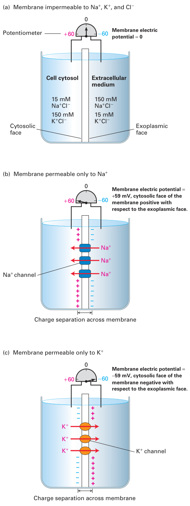
| Cell cytosol | 细胞质 |
| Extracellular medium | 细胞外介质 |
| Membrane impermeable to Na+, K+, and Cl− | 膜对Na+、K+和Cl−不通透 |
| Membrane permeable only to Na+ | 膜只对Na+通透 |
| Membrane permeable only to K+ | 膜只对K+通透 |
| Membrane electric potential | 膜电位 |
| Potentiometer | 电位计 |
| Cytosolic face | 胞质面 |
| Exoplasmic face | 外质面 |
| Charge separation across membrane | 跨膜电荷分离 |
| 59 mV, cytosolic face of the membrane positive with respect to the exoplasmic face | 59 mV，膜的胞质面相对于外质面为正 |
一个电位计（伏特计）与两侧溶液相连，用来测量跨膜的任何电位。起初，两侧溶液含有等量的正、负离子。如果膜对所有离子都不通透，就不会有离子跨膜流动。此外，如图11-18a所示，跨膜不会有电压差，即电位梯度。
现在假设膜上含有Na+通道，它们让Na+离子通过而排斥K+和Cl−离子（图11-18b）。于是Na+离子倾向于顺其浓度梯度从右侧移向左侧，使右侧留下过量的负电荷Cl−离子（相对于Na+），并在左侧产生过量的正电荷Na+离子（相对于Cl−）。左侧过量的Na+和右侧过量的Cl−都停留在膜的相应表面附近，因为膜一侧的过量正电荷被另一侧的过量负电荷吸引。由此产生的跨膜电荷分离构成电位（电压），膜左侧（胞质侧）相对于右侧带过量正电荷。
随着越来越多的Na+离子经通道跨膜移动，这种电荷差（即电压）的幅度增大。然而，Na+从右向左的持续移动最终会受到抑制：一方面来自膜左侧积累的过量正电荷（Na+）之间的相互排斥，另一方面来自Na+离子被右侧积累的过量负电荷吸引。系统很快达到一个平衡点，此时决定Na+离子移动的两个相反因素——膜电位与离子浓度梯度——相互抵消。达到平衡时，没有Na+离子跨膜的净移动。因此，这个膜与所有细胞膜一样，起电容器的作用——一种由薄层非导电材料（疏水内部）构成、两侧被导电材料（极性磷脂头基和周围水溶液中的离子）包围的装置，它能在一侧储存正电荷、在另一侧储存负电荷。
如果膜只对Na+离子通透，那么在平衡时，测得的跨膜电位就等于钠平衡电位ENa（以伏特为单位）。
ENa的大小由能斯特方程给出，该方程可由物理化学的基本原理推导出来：
式中R（气体常数）＝1.987 cal/(度 ⋅ mol)，即8.28 J/(度 ⋅ mol)；T（以开尔文表示的绝对温度）在20 °C时为293 K；Z（电荷，也称价数）此处等于+1；F（法拉第常数）＝23 062 cal/(mol ⋅ V)，即96 000 C/(mol ⋅ V)；[Na]左和[Na]右分别是平衡时左侧和右侧的Na+浓度。按惯例，电位以膜的胞质面相对于外质面表示，方程中把细胞外溶液（此处为膜的右侧）的离子浓度放在分子，把细胞质中的放在分母。
在20 °C（室温）下，方程11-2简化为
如果[Na]右/[Na]左＝10，即如图11-18b那样浓度比为10倍，则ENa＝+0.059 V（即+59 mV），左侧胞质面相对于右侧外质面为正。
如果膜只对K+离子通透，而对Na+或Cl−离子不通透，那么可用类似的方程描述钾平衡电位EK：
膜电位的幅度相同（浓度差10倍时为59 mV），但此时左侧胞质面相对于右侧外质面为负（图11-18c），因此极性与选择性通透Na+离子的膜相反。
动物细胞的静息膜电位主要取决于K+离子经开放K+通道的外流
动物细胞的质膜含有许多开放的K+通道，但开放的Na+、Cl−或Ca2+通道很少。因此，跨质膜的主要离子移动是K+由内向外移动，由K+浓度梯度驱动。这一移动在质膜的胞质面留下过量负电荷，并在外质面产生过量正电荷，如图11-18c所示的实验系统。K+离子的这种外流是内侧为负的膜电位的主要决定因素。K+离子流经的通道称为静息K+通道，它们像所有通道一样在开放与关闭状态之间交替（见图11-2），但由于其开闭不受膜电位或小信号分子的影响，这些通道被称为非门控通道。相反，神经元和其他可兴奋细胞中的各种门控通道（见第22章）只在响应特定配体或膜电位变化时开放。
定量地说，通常的静息膜电位（−60至−70 mV）接近由能斯特方程以及细胞和周围介质中K+浓度计算出的钾平衡电位（见表11-2）。通常静息膜电位比由能斯特方程计算的值略低（负得少一些），因为存在少量开放的Na+通道。这些通道允许Na+离子净向内流动，使质膜的胞质面比K+的能斯特方程所预测的更偏正，即负得少一些。驱动离子流经静息K+通道的K+浓度梯度，由前面描述的Na+/K+ ATP酶产生（见图11-3和图11-13）。没有这个泵，或当它被抑制时，K+浓度梯度无法维持，膜电位降至零，细胞最终死亡。
尽管静息K+通道在动物细胞质膜电位的产生中起主导作用，但细菌、植物和真菌细胞并非如此。植物和真菌细胞内侧为负的膜电位，是由ATP驱动的质子泵把带正电的质子（H+）泵出细胞产生的，这一过程类似于缺少Cl−通道的溶酶体膜中所发生的情况（见图11-14a）：每个被泵出细胞的H+都留下一个Cl−离子，从而产生跨膜的内侧为负的电位。在有氧细菌细胞中，内侧为负的电位由电子传递过程中质子向外泵送产生，这一过程类似于线粒体内膜的质子泵送，将在第12章详细讨论（见图12-22）。
细胞质膜两侧的电位，可以用插入细胞的微电极和在细胞外液中放置的参比电极来测量。两个电极连接到能测量微小电位差的电位计上（图11-19）。大多数动物细胞质膜两侧的电位一般不随时间变化。相反，神经元和肌肉细胞——两类主要的电活动细胞——其膜电位会发生受控的变化，我们将在第22章讨论。
离子通道凭借分子"选择性过滤器"对特定离子具有选择性
所有离子通道都表现出对特定离子的特异性：K+通道允许K+离子进入，而不允许关系很近的Na+离子进入；Na+通道则允许Na+而不允许K+。测定一种细菌K+通道的三维结构，首次揭示了这种精巧的离子选择性是如何实现的。对来自细菌、真菌和人类等不同生物的多种K+通道进行序列和结构比较后确认，它们都具有共同的结构，很可能由同一种通道蛋白演化而来。
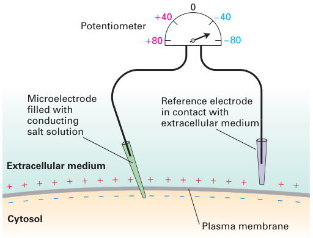
| Microelectrode filled with conducting salt solution | 充有导电盐溶液的微电极 |
| Plasma membrane | 质膜 |
| Cytosol | 细胞质 |
| Reference electrode in contact with extracellular medium | 与细胞外介质接触的参比电极 |
| Extracellular medium | 细胞外介质 |
| Potentiometer | 电位计 |
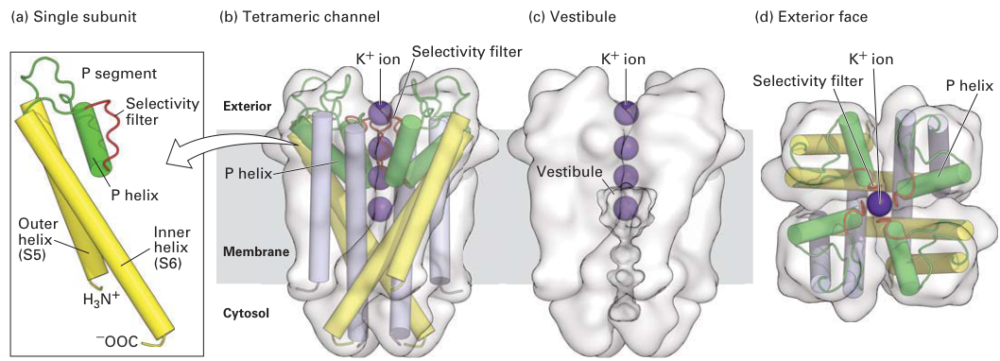
| (a) Single subunit | （a）单个亚基 |
| (b) Tetrameric channel | （b）四聚体通道 |
| Vestibule | 前庭 |
| Exterior face | 外质面 |
| Exterior | 外侧 |
| Membrane | 膜 |
| Cytosol | 细胞质 |
| P segment | P段 |
| Outer helix (S5) | 外侧螺旋（S5） |
| Inner helix (S6) | 内侧螺旋（S6） |
| Selectivity filter | 选择性过滤器 |
| P helix | P螺旋 |
与所有其他K+通道一样，细菌K+通道由四个相同的跨膜亚基围绕中央孔道对称排列构成（图11-20）。每个亚基含有两个跨膜α螺旋（S5和S6）以及一个短的P（孔）段，后者从外质表面部分伸入膜双分子层。在四聚体K+通道中，八个跨膜α螺旋（每个亚基两个）构成一个倒锥形，在通道的中央部分形成充满水的腔，称为前庭，它穿过膜的一半、伸向胞质侧。四个P段中延伸出来的四个环，在孔道靠近外质表面、前庭上方的狭窄部位构成真正的选择性过滤器。
若干相关证据支持P段在离子选择中的作用。第一，所有已知K+通道中P段的氨基酸序列高度同源，且与其他离子通道中的不同。第二，该段中某些氨基酸的突变会改变K+通道区分Na+与K+的能力。第三，把细菌K+通道的P段替换为哺乳动物K+通道中的同源片段，得到的嵌合蛋白对K+（相对于其他离子）仍表现出正常的选择性。因此，所有K+通道被认为使用相同机制来区分K+和其他离子。
Na+离子比K+离子小。那么，通道蛋白如何能排斥较小的Na+，却允许较大的K+通过？K+通道中选择性过滤器能把K+与Na+区分开，主要归功于位于Gly-Tyr-Gly序列中残基的主链羰基氧——在所有已知K+通道的P段中，这一序列都出现在类似的位置。当一个K+离子进入选择性过滤器——即由四个相邻亚基贡献的P段过滤序列之间的狭窄空间——时，它失去八个水合水，却以相同的几何构型与八个主链羰基氧结合，这些氧来自衬在通道上的四个P段中每个延伸环的两个（图11-21a左下）。因此，剥离K+离子的八个水合水所需能量很少，结果是K+离子从水溶液进入通道所需的活化能相对较低。脱水的Na+离子太小，无法以与Na+离子在水溶液中周围结合其正常八个水分子相同的几何构型，与衬在选择过滤器上的全部八个羰基氧结合。因此，Na+离子"宁愿"留在水中而不愿进入选择性过滤器，于是Na+离子进入通道的自由能变化相对较高（图11-21a右）。这种自由能差异使K+离子通过通道比Na+离子有利1000倍。与Na+一样，脱水的Ca2+离子比脱水的K+离子小，无法与选择性过滤器中的氧原子正确相互作用。此外，由于Ca2+离子带两个正电荷，比只带一个正电荷的Na+或K+离子更紧密地结合水氧，因此从Ca2+上剥离水合水比从K+或Na+上需要更多能量。
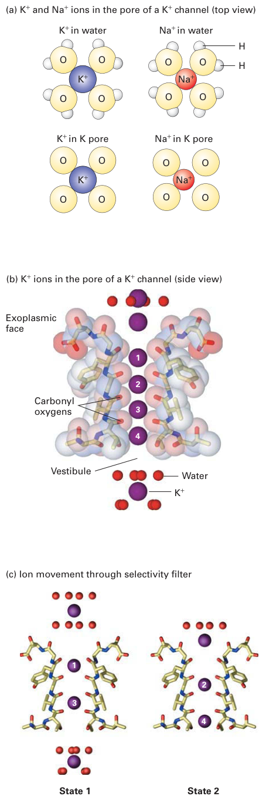
| K+ and Na+ ions in the pore of a K+ channel (top view) | K+通道孔道中的K+和Na+离子（俯视图） |
| K+ in water | 水中的K+ |
| Na+ in K+ pore | K+孔道中的Na+ |
| State 1 | 状态1 |
| State 2 | 状态2 |
| K+ channel (side view) | K+通道（侧视图） |
| Water | 水 |
| Exoplasmic face | 外质面 |
| Vestibule | 前庭 |
| Carbonyl oxygens | 羰基氧 |
| Ion movement through selectivity filter | 离子通过选择性过滤器的移动 |
最近的X射线晶体学研究显示，无论开放还是关闭，K+通道的选择性过滤器内都含有K+离子；没有这些离子，通道很可能会塌陷。K+离子被认为位于位置1和3、或位置2和4，每个离子都被八个羰基氧原子包围（图11-21b、c）。若干K+离子同时通过通道：当外质面上已部分失去水合水的离子移动到位置1时，位置2的离子跳到位置3，位置4的离子则离开通道（图11-21c）。
钠通道的第一个三维结构于2011年底被解析出来，其离子选择机制至今才逐步被阐明。与所有钾通道都共用同一个保守的选择性过滤器不同，对钠通道的研究显示，不同物种中不同类型的钠通道拥有不同类型的选择性过滤器，每一种都用不同的机制实现对Na+离子的选择性。
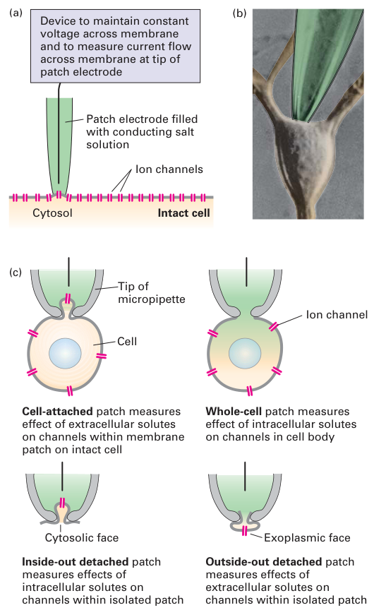
| Ion channels | 离子通道 |
| Patch electrode filled with conducting salt solution | 充有导电盐溶液的膜片电极 |
| Intact cell | 完整细胞 |
| Cytosol | 细胞质 |
| Device to maintain constant voltage across membrane and to measure current flow across membrane at tip of micropipette | 维持跨膜恒定电压并测量微吸管尖端跨膜电流的装置 |
| Whole-cell patch | 全细胞膜片钳 |
| Cell-attached | 细胞贴附式 |
| Inside-out detached patch | 内面向外的脱离膜片 |
| Outside-out detached | 外面向外的脱离膜片 |
| Ion channel | 离子通道 |
| Tip of micropipette | 微吸管尖端 |
| Cytosolic face | 胞质面 |
| Exoplasmic face | 外质面 |
膜片钳可测量通过单个通道的离子移动
当人们认识到大多数细胞中每平方微米质膜上只有一到几个离子通道之后，就有可能记录通过单个离子通道的离子移动，并测定这些通道开闭以及传导特定离子的速率，所用技术称为膜片钳。如图11-22所示，一根微小的玻璃微吸管用负压紧密封接到细胞表面；微吸管尖端内那一小片质膜只含一个或几个离子通道。穿过这片膜的唯一电流，必然是离子流过这些通道时形成的。电记录装置检测这种离子流（以电流计量）；这种离子流通常在通道开放时以小脉冲的形式出现（图11-23）。该电装置还把膜两侧的电位"钳制"（锁定）在预定值上（膜片钳一词由此而来）。离子跨过一片膜的向内或向外移动，可由把膜电位维持在某一"钳制"值所需的电流量来定量（图11-22a）。常用的膜片钳配置有四种（图11-22c）。在细胞贴附式膜片钳中，微吸管与一小片膜形成紧密封接，以记录该小区域内通道的电流。在全细胞膜片钳中，质膜被撕破，使玻璃微吸管得以接触细胞质，从而记录整个细胞体的电流。此外，还可以把小的膜片从细胞上撕下，使质膜的内表面或外表面暴露于细胞外溶液。向玻璃微吸管内的溶液中加入特定分子和化合物，可以用来探究这些试剂对离子通道功能的影响。
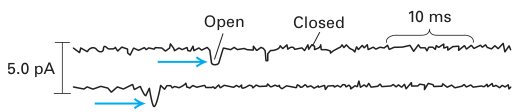
| Open | 开放 |
| Closed | 关闭 |
图11-23的记录曲线展示了如何用膜片钳研究肌肉细胞质膜中电压门控Na+通道（响应膜电位变化而开放）的性质。如第22章所述，这些通道在静息肌肉细胞中通常关闭，在神经元刺激后开放。每片平均含一个Na+通道的肌肉细胞质膜片被钳制在预定电压上，在本研究中略低于静息膜电位。在这种情况下，当单个Na+通道开放随后关闭时，正电荷（Na+离子）的瞬时脉冲从外质面穿过膜到达胞质面。每个通道要么完全开放，要么完全关闭。从这类记录曲线可以确定通道开放多长时间以及通过它的离子通量。对于图11-23中测量的通道，通量约为每个通道每秒1000万个Na+离子，这是离子通道的典型值。把膜片微吸管内的NaCl（相当于细胞外侧）替换为KCl或氯化胆碱，会消除通过通道的电流，证实它们只传导Na+离子，而不传导K+或其他离子。
新离子通道可通过卵母细胞表达与膜片钳相结合来表征
人类致病基因的克隆和人类基因组的测序，已鉴定出许多编码推定通道蛋白的基因，其中包括67个推定的K+通道。
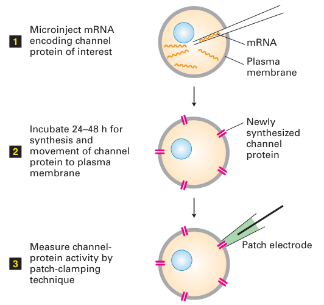
| Plasma membrane | 质膜 |
| Microinject mRNA encoding channel protein of interest | 显微注射编码目标通道蛋白的mRNA |
| Incubate 24–48 h for synthesis and movement of channel protein to plasma membrane | 孵育24–48小时，使通道蛋白合成并移动到质膜 |
| Measure channel-protein activity by patch-clamping technique | 用膜片钳技术测量通道蛋白活性 |
| Newly synthesized channel protein | 新合成的通道蛋白 |
| Patch electrode | 膜片电极 |
表征这些蛋白功能的一种方法是，在无细胞系统中转录克隆的cDNA，产生相应的mRNA。把该mRNA注射进蛙卵母细胞，并对新合成的通道蛋白进行膜片钳测量，往往能揭示其功能（图11-24）。这种实验方法特别有用，因为蛙卵母细胞质膜上通常不表达任何通道蛋白，所以膜上只有所研究的通道存在。此外，由于蛙卵母细胞体积大，对它们进行膜片钳研究在技术上比对小细胞更容易。
- 所有细胞质膜两侧都存在约60至70 mV的内侧为负的电位（电压）。
- 离子选择性跨膜流动所产生的电位，可用能斯特方程计算（见方程11-2）。
- 动物细胞的静息膜电位是ATP驱动的Na+/K+泵与静息K+通道共同作用的结果：泵建立跨膜的Na+和K+浓度梯度，而静息K+通道让K+离子顺其浓度梯度选择性地移回外部介质（见图11-3）。
- 与通常只在响应各种信号时才开放的门控离子通道不同，非门控的静息K+通道通常处于开放状态。
- 在植物和真菌中，膜电位由ATP驱动的质子泵送维持，把质子从细胞质泵到细胞外。
- K+通道由四个相同的亚基组装而成，每个亚基至少有两个保守的跨膜α螺旋和一个非螺旋的P段，P段衬在离子孔道内并构成选择性过滤器（见图11-20）。
- K+通道的离子特异性主要归因于K+离子与P段中特定氨基酸的八个羰基氧原子结合，与Na+或其他离子相比，这降低了K+通过的活化能（见图11-21）。
- 膜片钳技术可以测量通过单个通道的离子移动，用来测定通道的离子传导率以及各种试剂对其活性的影响（见图11-22）。
- 重组DNA技术与膜片钳相结合，可以在蛙卵母细胞中表达并表征通道蛋白的功能（见图11-24）。
11.5 同向转运体和反向转运体的协同转运
在前几节中，我们看到ATP驱动的泵如何在细胞膜两侧产生离子浓度梯度，以及K+通道如何利用K+浓度梯度在质膜两侧建立电位。在本节中，我们将看到协同转运体如何利用储存在Na+或H+离子的电位和浓度梯度中的能量，来驱动另一种物质逆浓度梯度移动，这种物质可能是葡萄糖之类的小有机分子、氨基酸，或另一种离子。这类协同转运的一个重要特点是：两种物质都不能单独移动；两种物质必须一起移动，即两者是偶联的。
协同转运体与GLUT蛋白之类的单向转运体有共同特征。这两类转运体在结构上有某些相似之处，工作速率相当，并在转运底物过程中经历循环性的构象变化。它们的区别在于：单向转运体只能加速顺浓度梯度的热力学有利转运，而协同转运体则能利用一种物质顺其浓度梯度移动所释放的能量，驱动另一种物质逆其浓度梯度移动。
当被转运分子与协同转运的离子同向移动时，该过程称为同向转运；反向移动时则称为反向转运（见图11-2）。有些协同转运体只转运正离子（阳离子），另一些只转运负离子（阴离子）。还有一些协同转运体同时介导阳离子与阴离子的移动。协同转运体存在于所有生物中，包括细菌、植物和动物。本节中我们介绍几种具有重要生理功能的同向转运体和反向转运体的工作机制与功能。
Na+进入哺乳动物细胞在热力学上是有利的
哺乳动物细胞表达许多种与Na+偶联的同向转运体。人类基因组编码的转运体种类数以百计，它们利用储存在Na+浓度梯度和质膜内侧为负的电位中的能量，把多种多样的分子逆浓度梯度转运进细胞。要了解这类转运体如何使细胞逆相当大的浓度梯度积累底物，我们首先需要计算Na+进入时发生的自由能变化（ΔG）。如前所述，有两种力支配离子跨选择性通透膜的移动：跨膜电压和跨膜离子浓度梯度。这些力的总和构成电化学梯度。要计算任一离子跨膜转运所对应的自由能变化ΔG，我们需要考虑每一种力对电化学梯度的独立贡献。
例如，当Na+从细胞外移动到细胞内时，由Na+浓度梯度产生的自由能变化为
在图11-25所示的细胞内、外Na+浓度下（这是许多哺乳动物细胞的典型值），假设不存在膜电位，把1摩尔Na+离子从细胞外转运到细胞内时，由浓度梯度引起的自由能变化ΔGc为−1.45 kcal。请注意自由能为负，表明Na+顺其浓度梯度自发进入细胞。
由膜电位产生的自由能变化为
式中F是法拉第常数［＝23 062 cal/(mol · V)］；E是膜电位。如果E＝−70 mV，那么假设不存在Na+浓度梯度，把1摩尔Na+离子从细胞外转运到细胞内时，由膜电位引起的自由能变化ΔGm为−1.61 kcal。由于这两种力实际上都作用于Na+离子，总的ΔG是两个分项之和：
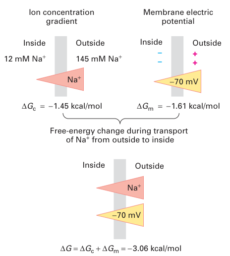
| Outside | 外侧 |
| Inside | 内侧 |
| Ion concentration gradient | 离子浓度梯度 |
| Membrane electric potential | 膜电位 |
| Free-energy change during transport of Na+ from outside to inside | Na+由外向内转运过程中的自由能变化 |
在这个例子中，Na+浓度梯度和膜电位对Na+离子转运的总ΔG贡献几乎相等。由于ΔG小于0，Na+离子的向内移动在热力学上是有利的。如下文所见，Na+的向内移动被用来驱动其他离子和若干种小分子逆浓度梯度进出动物细胞。Na+离子经门控Na+通道快速、能量上有利的移动，对神经元和肌肉细胞产生动作电位也至关重要，如第22章所述。
与Na+偶联的同向转运体使动物细胞能逆高浓度梯度输入葡萄糖和氨基酸
大多数身体细胞利用GLUT蛋白协助，顺葡萄糖浓度梯度从血液输入葡萄糖。然而某些细胞，如衬在小肠和肾小管的细胞，需要逆非常大的浓度梯度（细胞内葡萄糖浓度更高）从细胞外液（消化产物或可能的尿液）输入葡萄糖。这类细胞使用一种两个Na+／一个葡萄糖的同向转运体，这种蛋白把一个葡萄糖分子的输入与两个Na+离子的输入偶联起来：
定量地说，两个Na+离子和一个葡萄糖分子同向转运的自由能变化可写作
因此，总反应的ΔG是以下三者所产生自由能变化之和：葡萄糖浓度梯度（转运1个分子）、Na+浓度梯度（转运2个Na+离子）和膜电位（转运2个Na+离子）。如图11-25所示，Na+离子顺其电化学梯度进入哺乳动物细胞的自由能变化ΔG约为每摩尔转运的Na+ −3 kcal。因此，向内转运两摩尔Na+的ΔG将是这一数值的两倍，约−6 kcal。钠输入的这一负自由能变化，与葡萄糖的逆梯度转运（一个ΔG为正的过程）偶联。要计算这种Na+驱动的同向转运体能建立的葡萄糖浓度梯度（内高于外），只需认识到在与Na+偶联的葡萄糖输入达到平衡时ΔG＝0。把钠输入的数值代入方程11-7并令ΔG＝0，我们得到
于是可以算出，平衡时葡萄糖in/葡萄糖out的比值约为30 000。因此，两摩尔Na+的向内流动可以产生比外部浓度高约30 000倍的细胞内葡萄糖浓度。如果每个葡萄糖分子只输入一个Na+离子（ΔG约−3 kcal/mol），那么可用的能量只能产生约170倍的葡萄糖浓度梯度（内/外）。因此，通过把两个Na+离子的转运与一个葡萄糖分子的转运偶联起来，两个Na+／一个葡萄糖的同向转运体使细胞能够积累相对于外部浓度非常高的葡萄糖浓度。这意味着，即使肠腔或肾小管中葡萄糖浓度很低，也能被高效地转运进衬里细胞，而不会从体内流失。
两个Na+／一个葡萄糖的同向转运体被认为含有14个跨膜α螺旋，其N端和C端都伸入细胞质。图11-26描绘了目前关于Na+/葡萄糖同向转运体转运的模型。这一模型涉及蛋白质中类似于单向转运体（如GLUT1）所发生的那种构象变化，只是不需协同转运的离子（与图11-5比较）。所有底物与细胞外结构域上各自位点的结合是蛋白质发生构象变化、把底物结合位点由朝外构象转变为朝内构象的前提；这确保了葡萄糖与Na+离子的向内转运是偶联的。
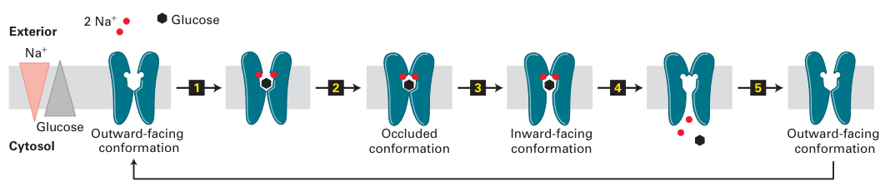
| Glucose | 葡萄糖 |
| 2 Na+ | 2个Na+ |
| Outward-facing conformation | 朝外构象 |
| Inward-facing conformation | 朝内构象 |
| Occluded | 封闭构象 |
| Exterior | 外侧 |
| Cytosol | 细胞质 |
人类有两种Na+/葡萄糖同向转运体。SGLT1存在于衬在小肠的吸收细胞以及衬在部分肾小管的上皮细胞中；SGLT2仅存在于肾小管，在那里与SGLT1一起，从正在形成的尿液中把葡萄糖重吸收回血液。抑制SGLT2会导致葡萄糖随尿排出并降低血糖水平，因此SGLT2抑制剂在II型糖尿病治疗中具有潜在用途。确实，目前已开发出若干选择性抑制SGLT2而不抑制SGLT1的候选药物，或正在进行临床试验，其中一种已在美国和加拿大获批使用。
细胞还利用Na+驱动的同向转运体，把葡萄糖以外的物质逆高浓度梯度转运进细胞。例如，若干类型的Na+/氨基酸同向转运体使细胞能够输入多种氨基酸。再如，Na+/神经递质同向转运体把Na+的输入与神经递质的重摄取和再循环偶联起来，它们是许多治疗药物（包括多种抗抑郁药）的作用靶点，也是可卡因和安非他命等几种滥用药物的作用靶点。■
一种细菌Na+/氨基酸同向转运体揭示了同向转运的工作机制
目前尚未测定出任何哺乳动物Na+偶联同向转运体的三维结构，但几种同源的细菌Na+/底物同向转运体的结构，已为理解同向转运体的功能提供了大量信息。图11-27a所示的细菌两个Na+/一个亮氨酸同向转运体由12个跨膜α螺旋组成。其中两个螺旋（第1和第6个）在膜的中部含有非螺旋片段，构成亮氨酸结合位点的一部分。
参与结合亮氨酸和两个Na+离子的氨基酸残基位于跨膜片段的中部（如图11-26中两个Na+/一个葡萄糖同向转运体所示），并在三维空间上彼此靠近。这种邻近关系提示，这些转运体中氨基酸转运与离子转运的偶联，是底物之间直接或近乎直接物理相互作用的结果。事实上，其中一个Na+离子与所转运亮氨酸的羧基结合（图11-27b）。因此两种物质缺一不可，任何一种都无法单独与转运体结合。两个Na+离子各与转运体中的六个氧原子结合。例如，钠1既与转运体上若干氨基酸的羰基氧结合，也与一个苏氨酸的羰基氧和羟基氧结合。同样重要的是，两个已结合的Na+原子周围都没有水分子，这与钾通道中K+离子的情况相同（见图11-21）。因此，Na+离子在与转运体结合时失去水合水，却以相似的几何构型与六个氧原子结合。这降低了Na+离子结合所需的能量变化，并阻止K+等其他离子取代Na+而结合。
图11-27所示结构的一个显著特点是，已结合的Na+离子和亮氨酸被封闭在蛋白内部——也就是说，它们无法从蛋白扩散到周围的细胞外介质或细胞质介质中。这一结构代表转运过程中的一个中间态（见图11-26），此时转运体似乎正在从结合位点朝外质面的构象转变为结合位点朝胞质面的构象。
一种Na+偶联的Ca2+反向转运体调节心肌收缩的强度
在所有肌肉细胞中，细胞质Ca2+浓度升高都会触发收缩。在心肌细胞中，维持细胞质中低Ca2+浓度的主要角色不是前面讨论过的质膜Ca2+ ATP酶，而是一个三个Na+/一个Ca2+的反向转运体。这种阳离子反向转运体所介导的转运反应可写作
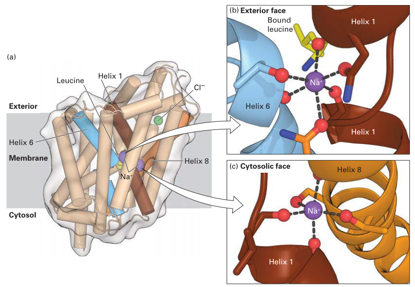
| Exterior face | 外质面 |
| Cytosolic face | 胞质面 |
| Membrane | 膜 |
| Leucine | 亮氨酸 |
| Helix 1 | 螺旋1 |
| Helix 6 | 螺旋6 |
| Helix 8 | 螺旋8 |
| Bound Cl− | 结合的Cl− |
请注意，把一个Ca2+离子从细胞质输出到细胞外介质，需要三个Na+离子的向内移动来提供能量：细胞质的[Ca2+]约为2 × 10⁻⁷ M，细胞外介质的[Ca2+]约为2 × 10⁻³ M，即浓度梯度约为10 000倍（外侧更高）。Na+/Ca2+反向转运体通过降低细胞质Ca2+，减弱心肌收缩的强度。
心肌细胞质膜中的Na+/K+ ATP酶与其他体细胞中一样，产生Na+偶联的Ca2+反向转运体输出Ca2+所需的Na+浓度梯度。如前所述，乌本苷和地高辛等药物对Na+/K+ ATP酶的抑制会降低细胞质K+浓度，而在这里更重要的是同时升高细胞质Na+。由此导致的跨膜Na+电化学梯度下降，使Na+偶联的Ca2+反向转运体的工作效率降低。结果是输出的Ca2+减少，细胞质Ca2+浓度升高，使肌肉收缩得更强。由于能增强心肌收缩力，乌本苷和地高辛这类抑制Na+/K+ ATP酶的药物被广泛用于治疗充血性心力衰竭。■
若干协同转运体调节细胞质pH
葡萄糖的无氧代谢产生乳酸，有氧代谢产生CO2，CO2与水结合形成碳酸（H2CO3）。这些弱酸解离产生H+离子（质子）；如果这些过量质子不被移出细胞，细胞质pH会急剧下降，危及细胞功能。动物细胞中有两类协同转运体有助于移出代谢产生的一部分过量质子。一种是Na+HCO3−/Cl−反向转运体，它输入一个Na+离子和一个HCO3−，同时输出一个Cl−离子。细胞质中的酶碳酸酐酶催化输入的HCO3−离子解离为CO2和OH−（羟基）离子：
OH−离子与细胞内的质子结合生成水，CO2则扩散出细胞。因此，这种转运体的总作用是消耗细胞质中的H+离子，从而升高细胞质pH。对升高细胞质pH同样重要的是一种Na+/H+反向转运体，它把Na+离子顺其浓度梯度进入细胞的移动，与一个H+离子的输出偶联起来。
在某些情况下，细胞质pH会升到超出7.2–7.5的正常范围。
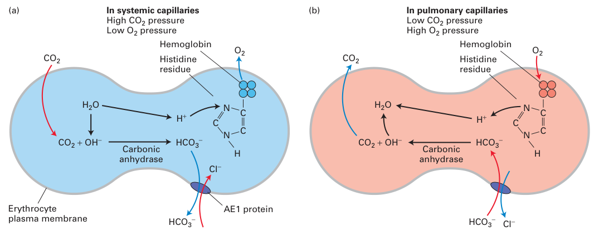
| Carbonic anhydrase | 碳酸酐酶 |
| Hemoglobin | 血红蛋白 |
| Histidine residue | 组氨酸残基 |
| AE1 protein | AE1蛋白 |
| Erythrocyte plasma membrane | 红细胞质膜 |
| In systemic capillaries | 在体循环毛细血管中 |
| High CO2 pressure | 高CO2分压 |
| Low O2 pressure | 低O2分压 |
| In pulmonary capillaries | 在肺毛细血管中 |
| Low CO2 pressure | 低CO2分压 |
| High O2 pressure | 高O2分压 |
为了应对与pH升高相关的过量OH−离子，许多动物细胞使用一种阴离子反向转运体，它催化质膜两侧HCO3−与Cl−的一对一交换。在pH偏高时，这种Cl−/HCO3−反向转运体输出一个HCO3−分子（可视为OH−与CO2的"复合物"），同时输入一个Cl−分子，从而降低细胞质pH。Cl−顺其浓度梯度（Cl−细胞外 > Cl−细胞质；见表11-2）的移动，为HCO3−的输出提供能量。
这三种反向转运体的活性都受细胞质pH调节，为细胞提供了精细调控细胞质pH的机制。两种用于升高细胞质pH的反向转运体在细胞质pH下降时被激活。同样，pH升到7.2以上会刺激Cl−/HCO3−反向转运体，导致HCO3−输出加快、细胞质pH下降。通过这种方式，生长细胞的细胞质pH维持在非常接近pH 7.4的水平。
一种阴离子反向转运体对红细胞运输CO2至关重要
跨膜阴离子交换对红细胞的一项重要功能必不可少：把代谢废物CO2从外周组织运送到肺排出。细胞释放到毛细血管血液中的CO2可自由扩散穿过红细胞膜（图11-28a）。CO2以气态形式存在时，在细胞质或血浆等水溶液中溶解得很差，凡打开过碳酸饮料瓶的人对此都有体会。不过，红细胞中大量的强效酶碳酸酐酶把CO2与羟基离子（OH−）结合，形成水溶性的碳酸氢根（HCO3−）阴离子。这一过程发生在红细胞处于体循环（组织）毛细血管、并向血浆释放氧气的时候。血红蛋白释放氧气会诱导其构象发生变化，使珠蛋白多肽的一个组氨酸侧链能够结合一个质子。因此，当红细胞处于体循环毛细血管中时，水被分解为结合血红蛋白的质子和与CO2反应生成HCO3−阴离子的OH−。
在反向转运体AE1催化的反应中，细胞质中的HCO3−被运出红细胞，同时输入一个Cl−阴离子：
（见图11-28a）。整个阴离子交换过程在50毫秒（ms）内完成，在此期间每个细胞顺其浓度梯度输出5 × 10⁹个HCO3−离子。如果阴离子交换不发生，那么在运动等CO2大量生成的时期，HCO3−会在红细胞内积累到毒性水平，因为细胞质会变碱。HCO3−（相当于OH− + CO2）与Cl−的交换使细胞质pH保持接近中性。
正常情况下，血液中约80%的CO2以红细胞内生成的HCO3−形式运输；阴离子交换使其中约三分之二的HCO3−由细胞外的血浆来运输，从而增加了可从组织运送到肺的CO2量。在CO2排出体外的肺中，这一阴离子交换过程的总方向发生逆转（图11-28b）。
AE1催化质膜两侧阴离子的精确一对一顺序交换，这是维持细胞内电中性所必需的；大约每10 000个转运循环才有一次阴离子从膜的一侧单向移动到另一侧。
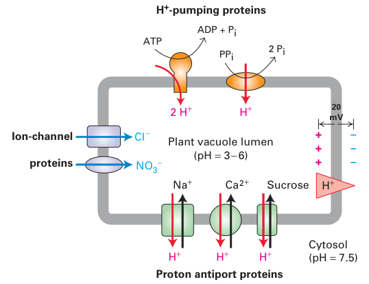
| Plant vacuole lumen (pH 3–6) | 植物液泡腔（pH 3–6） |
| Cytosol (pH 7.5) | 细胞质（pH 7.5） |
| Ion-channel proteins | 离子通道蛋白 |
| Proton antiport proteins | 质子反向转运蛋白 |
| H+-pumping proteins | H+泵送蛋白 |
| Sucrose | 蔗糖 |
AE1由一个嵌在膜内的结构域和一个朝向细胞质的结构域组成：前者折叠成至少12个跨膜α螺旋，催化阴离子转运；后者把某些细胞骨架蛋白锚定在膜上（见图17-21）。
多种转运蛋白使植物液泡能够积累代谢物和离子
植物液泡腔比细胞质（pH 7.5）酸性得多（pH 3–6）。液泡的酸性由V类ATP驱动的质子泵（见图11-9）和一种植物特有的焦磷酸驱动的质子泵维持。这两种泵都位于液泡膜上，逆浓度梯度把H+离子输入液泡腔。液泡膜还含有Cl−和NO3−通道，把这些阴离子从细胞质转运进液泡。这些阴离子逆其浓度梯度进入液泡，是由质子泵产生的内侧为正的电位驱动的。这些质子泵与阴离子通道的共同作用，在液泡膜两侧产生约20 mV的内侧为正的电位以及可观的pH梯度（图11-29）。
植物液泡膜两侧的质子电化学梯度，其使用方式与动物细胞质膜两侧的Na+电化学梯度大致相同：为各种反向转运体选择性地摄取或排出离子和小分子提供能量。例如在叶片中，白天光合作用产生的过量蔗糖储存在液泡里；到了夜间，储存的蔗糖进入细胞质，被代谢为CO2和H2O，同时由ADP和Pi生成ATP。液泡膜中的质子/蔗糖反向转运体负责把蔗糖积累在植物液泡中。蔗糖的向内移动由H+的向外移动提供能量，后者既受其浓度梯度（腔 > 细胞质）的驱动，也受液泡膜两侧胞质侧为负的电位的驱动（见图11-29）。Ca2+和Na+从细胞质逆浓度梯度被摄取进液泡，同样由质子反向转运体介导。
我们对植物液泡膜转运体的认识，有望提高世界各地高盐（NaCl）土壤上的农业产量。由于大多数有农业价值的作物无法在这种盐渍土中生长，农业科学家长期以来一直试图通过传统育种方法培育耐盐植物。随着编码液泡Na+/H+反向转运体的基因被克隆，研究人员现在可以培育出过量表达这种转运体的转基因植物，从而把更多的Na+封存进液泡。例如，过量表达液泡Na+/H+反向转运体的转基因番茄，能在会杀死野生型植株的土壤NaCl浓度下生长、开花并结果。有趣的是，尽管这些转基因番茄的叶片积累了大量的盐，果实中的盐含量却很低。■
- 跨半透膜的电化学梯度决定离子通过跨膜蛋白移动的方向。构成电化学梯度的两种力——膜电位和离子浓度梯度——可能同向，也可能反向（见图11-25）。
- 协同转运体利用一种离子（通常是H+或Na+）顺其电化学梯度移动所释放的能量，为一种小分子或另一种离子逆其浓度梯度输入或输出提供动力。
- 衬在小肠和肾小管的细胞含有同向转运体，它们把Na+能量上有利的进入与葡萄糖逆其浓度梯度的输入偶联起来（见图11-26）。氨基酸也通过Na+偶联的同向转运体进入细胞。
- 一种细菌Na+/氨基酸同向转运体的分子结构，揭示了Na+的结合与亮氨酸的结合如何相互偶联，并提供了一幅转运中间态的"快照"——在中间态中，已结合的底物无法扩散出蛋白（见图11-27）。
- 在心肌细胞中，Ca2+的输出由一种阳离子反向转运体输入Na+所偶联并驱动，该转运体每输出一个Ca2+离子，就向内转运三个Na+离子。
- 在动物细胞中，两种在低pH下被激活的协同转运体有助于使细胞质pH在代谢产生碳酸和乳酸的情况下仍保持非常接近7.4。一种是Na+/H+反向转运体，它输出过量的质子。另一种是Na+HCO3−/Cl−协同转运体，它输入HCO3−，HCO3−在细胞质中解离产生能升高pH的OH−离子。
- 一种在细胞质pH升到高于正常值时被激活的Cl−/HCO3−反向转运体，通过输出HCO3−来降低pH。
- 红细胞膜中的Cl−/HCO3−反向转运体AE1增强了血液把CO2从组织运送到肺的能力（见图11-28）。
- 蔗糖、Na+、Ca2+等物质被摄取进植物液泡，是由液泡膜中的质子反向转运体完成的。膜中的离子通道和质子泵对于产生足够大的质子浓度梯度以驱动这些质子反向转运体至关重要（见图11-29）。
11.6 跨细胞转运
前面几节说明了若干类型的转运体如何协同完成重要的细胞功能。这里我们扩展这一概念，聚焦于几类分子和离子跨极性细胞的转运。极性细胞是不对称的（具有不同的"侧面"），因而其质膜在生化上分为不同区域。研究得特别充分的一类极性细胞，是构成片状层（上皮）覆盖身体器官大部分外表面和内表面的许多上皮细胞。（上皮细胞将在第20章详细讨论。）与许多上皮细胞一样，参与从胃肠道吸收营养的小肠上皮细胞，其质膜分为两个主要区域：朝向生物体外部的表面，称为顶端面（或顶面）；以及朝向生物体内部（即朝向血流的一侧）的表面，称为基底外侧面，它由细胞的基底面和侧面组成（见图20-11）。
上皮细胞质膜上称为紧密连接的特化区域把顶端膜与基底外侧膜隔开，并阻止一侧的许多（但不是全部）水溶性物质经细胞之间的细胞外间隙移动到另一侧。因此，许多营养物质从肠腔跨上皮细胞层、并最终进入血液的吸收，是通过一个称为跨细胞转运的两阶段过程完成的：分子经小肠上皮细胞顶端侧的质膜输入，再经基底外侧（朝向血流）侧的质膜输出（图11-30）。质膜朝向肠腔的顶端部分，特化用于吸收由多种消化酶从食物中产生的糖、氨基酸和其他分子。
葡萄糖和氨基酸跨上皮转运需要多种转运蛋白
图11-30描绘了介导葡萄糖从肠腔吸收入血的蛋白质，它说明了一个重要概念：不同类型的蛋白质分别定位于上皮细胞的顶端膜和基底外侧膜。在这一过程的第一阶段，位于顶端膜的两个Na+/一个葡萄糖同向转运体逆浓度梯度把葡萄糖从肠腔跨上皮细胞顶端面输入。如上所述，这种同向转运体把一个葡萄糖分子能量上不利的向内移动，与两个Na+离子能量上有利的向内转运偶联起来（见图11-26）。在稳态下，Na+/葡萄糖同向转运（以及同样发生在顶端膜上的类似过程Na+/氨基酸同向转运）中从肠腔转运进细胞的所有Na+离子，都被跨朝向血液的基底外侧膜泵出，细胞内的低Na+浓度由此得以维持。完成这一泵送任务的Na+/K+ ATP酶只存在于小肠上皮细胞的基底外侧膜上。这两种转运蛋白的协同运作，使得葡萄糖和氨基酸能够逆浓度梯度从肠腔进入细胞。
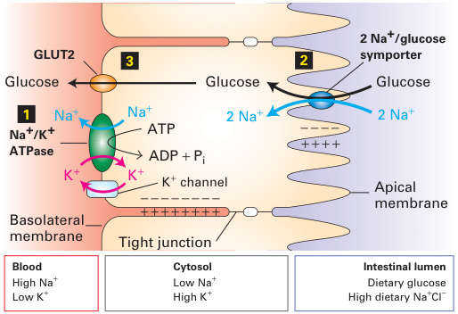
| Apical membrane | 顶端膜 |
| 2 Na+/glucose symporter | 两个Na+/葡萄糖同向转运体 |
| Dietary glucose | 食物中的葡萄糖 |
| High dietary Na+ | 食物中的高Na+ |
| Basolateral | 基底外侧 |
| High Na+ | 高Na+ |
| Low K+ | 低K+ |
| Blood | 血液 |
| Intestinal lumen | 肠腔 |
| Low Na+ | 低Na+ |
| High K+ | 高K+ |
| Cytosol | 细胞质 |
| Glucose | 葡萄糖 |
| Tight junction | 紧密连接 |
| Na+/K+ ATPase | Na+/K+ ATP酶 |
| K+ channel | K+通道 |
跨细胞转运的这一第一阶段，最终由Na+/K+ ATP酶水解ATP提供能量。
在第二阶段，由顶端同向转运体在小肠细胞内浓集的葡萄糖和氨基酸，经基底外侧膜中的单向转运蛋白顺其浓度梯度输出到血液中。就葡萄糖而言，这一移动由GLUT2介导（见图11-30）。如前所述，这种GLUT亚型对葡萄糖的亲和力较低，但当跨膜葡萄糖梯度升高时，其转运速率会大幅增加（见图11-4）。
这一两阶段过程的净结果是：Na+离子、葡萄糖和氨基酸从肠腔跨小肠上皮，进入围绕小肠上皮细胞基底外侧面的细胞外介质，并最终进入血液。上皮细胞之间的紧密连接阻止这些分子扩散回肠腔。盐、葡萄糖和氨基酸跨小肠上皮的跨细胞转运所产生的渗透压升高，把水从肠腔（主要经紧密连接）吸入围绕基底外侧面的细胞外介质；水通道蛋白似乎不起主要作用。从某种意义上说，盐、葡萄糖和氨基酸"带着"水一起走。
简便的补液疗法依赖葡萄糖和Na+吸收所产生的渗透梯度
对渗透作用以及肠道吸收盐和葡萄糖的认识，构成了一种简便疗法的基础，这种疗法每年挽救数百万人的生命，尤其是在发展中国家。在这些国家，霍乱和其他肠道病原体是幼儿死亡的主要原因。这些细菌释放的一种毒素会激活氯离子从小肠上皮细胞顶端面分泌进肠腔；水随之渗透性地移动，由此造成的大量失水导致腹泻、脱水，最终死亡。治愈不仅需要用抗生素杀死细菌，还需要补液：补充从血液和其他组织丢失的水。
单纯喝水没有帮助，因为水几乎一进入胃肠道就被排出。然而，正如我们刚刚看到的，葡萄糖和Na+跨小肠上皮的协同转运产生了一个跨上皮渗透梯度，迫使水从肠腔跨上皮细胞层并最终进入血液。因此，给患病儿童喝糖盐溶液（只给糖或只给盐都不行），会增加钠和糖的跨上皮转运，从而使水从肠腔渗透性地流入血液，达到补液效果。类似的糖盐溶液也是运动员常用饮料的基础，用于快速、高效地为身体补充糖和水。■
壁细胞在酸化胃内容物的同时维持中性的细胞质pH
哺乳动物胃中含有0.1 M的盐酸（HCl）溶液。这种强酸性介质杀死许多随食物摄入的病原体，并使许多摄入的蛋白质变性，以便被在酸性pH下发挥作用的蛋白水解酶（如胃蛋白酶）降解。盐酸由胃黏膜中称为壁细胞（又称泌酸细胞）的特化上皮细胞分泌进胃。这些细胞的顶端膜（朝向胃腔）中含有一种H+/K+ ATP酶，它产生100万倍的H+浓度梯度：胃腔中pH约为1.0，而细胞质中pH约为7.2。这种P类ATP驱动的离子泵在结构和功能上与前面讨论的质膜Na+/K+ ATP酶相似。壁细胞中众多的线粒体产生充足的ATP供H+/K+ ATP酶使用。
如果壁细胞只是输出H+离子以交换K+离子，质子的丢失会导致细胞质中OH−离子浓度升高，从而使细胞质pH明显升高。（请回忆，[H+] × [OH−] 始终是一个常数，为10⁻¹⁴ M²。）壁细胞在酸化胃腔的同时避免细胞质pH升高的办法，是利用基底外侧膜中的Cl−/HCO3−反向转运体，把过量的OH−离子从细胞质输出到血液。如前所述，这些阴离子反向转运体在细胞质pH偏高时被激活。
壁细胞酸化胃腔的整个过程如图11-31所示。在碳酸酐酶催化的反应中，细胞质中过量的OH−与从血液扩散进来的CO2结合，形成HCO3−。
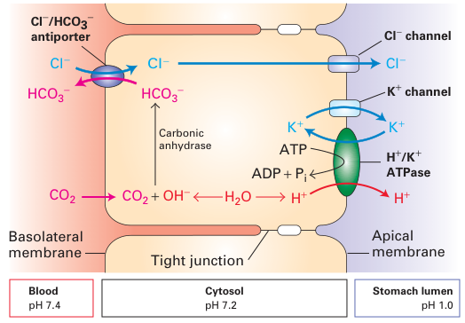
| Apical membrane | 顶端膜 |
| Basolateral | 基底外侧 |
| Stomach lumen | 胃腔 |
| Blood | 血液 |
| Cytosol | 细胞质 |
| Cl− channel | Cl−通道 |
| H+/K+ ATPase | H+/K+ ATP酶 |
| Cl−/HCO3− antiporter | Cl−/HCO3−反向转运体 |
| Carbonic anhydrase | 碳酸酐酶 |
| Tight junction | 紧密连接 |
这种碳酸氢根离子由Cl−/HCO3−反向转运体跨基底外侧膜输出（并最终进入血液），同时换入一个Cl−离子。Cl−离子随后经顶端膜中的Cl−通道离开细胞，进入胃腔。为维持电中性，每个经顶端膜进入胃腔的Cl−离子都伴随一个经另一条K+通道向外移动的K+离子。这样，由H+/K+ ATP酶向内泵入的过量K+离子被送回胃腔，从而维持正常的细胞内K+浓度。净结果是向胃腔分泌等量的H+和Cl−离子（即HCl），同时细胞质pH保持中性，过量的OH−则以HCO3−的形式被转运进血液，而血液pH的变化微乎其微。
骨吸收需要V类质子泵与一种特定氯离子通道的协同作用
哺乳动物的骨净生长在青春期刚过后就停止，但一种平衡精细、高度动态的分解（骨吸收）与重建（骨形成）过程在整个成年期持续进行。这种持续不断的骨重塑使受损的骨得以修复，并能把钙、磷酸和其他离子从矿化的骨释放进血液，供身体其他部位使用。
溶骨细胞——破骨细胞——属于巨噬细胞，这类细胞最为人熟知的作用是保护机体免受感染。破骨细胞是极性细胞，它们黏附在骨上，并在自身与骨之间形成特化的、非常紧密的密封，围出一个封闭的细胞外空间（图11-32）。黏附后的破骨细胞向这个空间分泌由HCl和蛋白酶组成的腐蚀性混合物，把骨的无机成分溶解为Ca2+和磷酸，并消化其蛋白质成分。HCl分泌的机制与胃产生消化液的机制相似（见图11-31）。与胃的HCl分泌一样，碳酸酐酶和一种阴离子反向转运体对破骨细胞的功能很重要。破骨细胞使用V类质子泵把H+离子输出到朝向骨的空间，而不是胃上皮细胞所用的P类H+/K+泵。
一种罕见的遗传病——骨硬化症——以骨密度增高为特征，由骨吸收异常低下引起。许多患者的TCIRG1基因存在突变，该基因编码破骨细胞V类质子泵的一个亚基，其作用是把破骨细胞与骨之间的空间酸化所必需的。另一些患者的ClC-7基因存在突变，该基因编码定位于破骨细胞质膜朝向骨附近空间那一区域的氯离子通道。与溶酶体的情况一样（见图11-14），缺少氯离子通道时，质子泵无法酸化这个封闭的细胞外空间，因此骨吸收出现缺陷。■
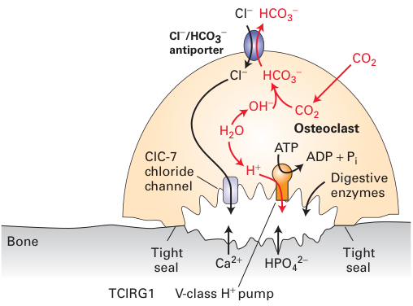
| V-class H+ pump | V类H+泵 |
| ClC-7 chloride channel | ClC-7氯离子通道 |
| Cl−/HCO3− antiporter | Cl−/HCO3−反向转运体 |
| Osteoclast | 破骨细胞 |
| Bone | 骨 |
| Tight seal | 紧密密封 |
| Digestive enzymes | 消化酶 |
访问LaunchPad获取学习工具并了解更多本章内容：展望未来、经典实验：发现主动转运的经过、分析数据、扩展参考文献、附加学习工具（包括视频、动画和测验）
关键术语
复习题
- 1.一氧化氮（NO）是一种气体分子，其脂溶性类似于O2和CO2。衬在动脉上的内皮细胞利用NO向周围平滑肌细胞发出松弛信号，从而增加血流。NO从内皮细胞细胞质中产生之处，到它发挥作用的平滑肌细胞细胞质，需要什么机制来转运？
- 2.乙酸（一种pKa为4.75的弱酸）和乙醇（一种醇）都各由两个碳原子、氢和氧组成，也都通过被动扩散进入细胞。在pH 7时，其中一种穿透细胞膜的能力远强于另一种。哪一种对膜的通透性更强？为什么？请预测当细胞外pH降到1.0（胃中的典型值）时，两者的膜通透性各自如何改变。
- 3.单向转运体和离子通道都支持跨细胞膜的易化转运。虽然两者都是易化转运的例子，但经离子通道的离子移动速率大约比经单向转运体的分子移动速率快10⁴至10⁵倍。造成这一巨大转运速率差异的关键机制差异是什么？自由能（ΔG）中的哪一项决定转运的方向？
- 4.说出三类膜转运蛋白的名称。说明其中哪一类或哪几类能把葡萄糖逆电化学梯度移动，哪一类能把碳酸氢根（HCO3−）逆电化学梯度移动。就碳酸氢根而言（而非葡萄糖），转运过程的ΔG有两项。这两项是什么？为什么第二项不适用于葡萄糖？为什么协同转运体常被称为继发性主动转运的例子？
- 5.氢离子（H+）比H2O分子小，而甘油分子（一种三碳醇）则大得多。两者都易溶于H2O。为什么水通道蛋白不能转运H+，而有些却能转运甘油？
- 6.存在于红细胞质膜上的GLUT1是单向转运体的经典例子。
a. 设计一组实验，证明GLUT1确实是葡萄糖特异的单向转运体，而不是半乳糖或甘露糖特异的单向转运体。
b. 葡萄糖是六碳糖，核糖是五碳糖。尽管核糖更小，GLUT1却不能有效地转运它。这该如何解释？
c. 血糖从5 mM降到2.8 mM或更低可引起意识混乱和晕厥。计算这一下降对表达GLUT1的细胞摄取葡萄糖的影响。
d. 肝细胞和肌细胞如何在不改变Vmax的情况下使葡萄糖摄取最大化？
e. 表达GLUT1的肿瘤细胞，其葡萄糖转运的Vmax往往高于同类型的正常细胞。这些细胞如何提高Vmax？
f. 脂肪细胞和肌细胞响应胰岛素信号调节葡萄糖摄取的Vmax。机制如何？ - 7.说出产生离子和分子主动转运的四类ATP驱动泵。指出其中哪些只转运离子，哪些主要转运小有机分子。其中一类ATP驱动泵最初被发现，是源于研究一种并非天然底物、而是用作癌症化疗药物的人工底物的转运。研究者现在认为，这一类ATP驱动泵的天然底物有哪些常见例子？
- 8.解释为什么P类离子泵机制中偶联的反应ATP → ADP + Pi并不涉及磷酸酐键的直接水解。
- 9.对于那些需要Ca2+浓度快速变化才能正常发挥功能的细胞，描述一种控制细胞质Ca2+浓度升高的负反馈机制。一种抑制钙调蛋白活性的药物会如何影响这一机制对细胞质Ca2+浓度的调节？例如对骨骼肌细胞的功能会有什么影响？
- 10.某些抑制胃酸分泌的质子泵抑制剂是当今世界上销量最大的药物之一。这类药物抑制的是哪种泵？这种泵位于何处？
- 11.动物细胞（而非植物细胞）的膜电位在很大程度上取决于静息K+通道。这些通道如何促成静息膜电位？为什么这些通道被认为是非门控通道？这些通道如何实现对K+相对于比K+更小的Na+的选择性？
- 12.膜片钳可用于测量单个离子通道的传导特性。描述如何用膜片钳判断一个推定K+通道的编码基因究竟编码的是K+通道还是Na+通道。
- 13.植物利用液泡膜两侧的质子电化学梯度，为盐和糖在该细胞器中的积累提供能量。这种积累在液泡中造成高渗条件。为什么这不会导致植物细胞膨胀并破裂？即使在等渗条件下，动物细胞也会有缓慢的离子漏入。质膜上的Na+/K+ ATP酶如何使动物细胞在等渗条件下避免渗透性裂解？
- 14.就细菌的两个Na+/一个亮氨酸同向转运体而言，已结合的Na+离子有什么关键区别性特征，从而确保K+等其他离子不能结合？
- 15.描述衬在小肠的细胞输入葡萄糖的同向转运过程。哪种离子负责这一转运？有哪两个具体特征促成了这种离子顺能量有利方向跨膜移动？
- 16.葡萄糖从肠上皮一侧移动到另一侧，是跨细胞转运的一个重要例子。Na+/K+ ATP酶如何为该过程提供动力？为什么紧密连接对这一过程必不可少？为什么转运体特异性地定位于顶端膜或基底外侧膜对跨细胞转运至关重要？运动饮料之类的补液补充剂含有一种糖和一种盐。为什么两者对补液都很重要？
参考文献
葡萄糖和水的易化转运
Chen, L. Q., et al. 2015. Transport of sugars. Annu. Rev. Biochem. 84:865–894.
Deng, D., et al. N. 2014. Crystal structure of the human glucose transporter GLUT1. Nature 510:121–126.
Gonen, T., and T. Walz. 2006. The structure of aquaporins. Quart. Rev. Biophys. 39:361–396.
ATP驱动的泵与细胞内离子环境
Aller, S., et al. 2009. Structure of P-glycoprotein reveals a molecular basis for poly-specific drug binding. Science 323:1718–1722.
Oldham, M. L., A. L. Davidson, and J. Chen. 2008. Structural insights into ABC transporter mechanism. Curr. Opin. Struct. Biol. 18:726–733.
Penmatsa, A., and E. Gouaux. 2014. How LeuT shapes our understanding of the mechanisms of sodium-coupled neurotransmitter transporters. J. Physiol. 592:863–869.
Ramsey, B. W., et al. 2011. A CFTR potentiator in patients with cystic fibrosis and the G551D mutation. N. Engl. J. Med. 365:1663–1672.
Shinoda, T., et al. 2009. Crystal structure of the sodium–potassium pump at 2.4 Å resolution. Nature 459:446–450.
非门控离子通道与静息膜电位
Gouaux, E., and R. Mackinnon. 2005. Principles of selective ion transport in channels and pumps. Science 310:1461–1465.
Hibino, H., et al. 2010. Inwardly rectifying potassium channels: their structure, function, and physiological roles. Physiol. Rev. 90:291–366.
Hille, B. 2001. Ion Channels of Excitable Membranes, 3d ed. Sinauer Associates.
同向转运体和反向转运体的协同转运
Alper, S. L. 2009. Molecular physiology and genetics of Na+-independent SLC4 anion exchangers. J. Exp. Biol. 212:1672–1683.
Gao, X., et al. 2009. Structure and mechanism of an amino acid antiporter. Science 324:1565–1568.
Krishnamurthy, H., C. L. Piscitelli, and E. Gouaux. 2009. Unlocking the molecular secrets of sodium-coupled transporters. Nature 459:347–355.
Wright, E. M. 2004. The sodium/glucose cotransport family SLC5. Pflug. Arch. 447:510–518.
跨细胞转运
Anderson, J. M., and C. M. Van Itallie. 2009. Physiology and function of the tight junction. Cold Spring Harb. Perspect. Biol. 1:a002584.
Rao, M. 2004. Oral rehydration therapy: new explanations for an old remedy. Annu. Rev. Physiol. 66:385–417.
Sobacchi, C., et al. 2013. Osteopetrosis: genetics, treatment and new insights into osteoclast function. Nat. Rev. Endocrinol. 9:522–536.
新视角
Liao, M., et al. 2014. Single particle electron cryo-microscopy of a mammalian ion channel. Curr. Opin. Struct. Biol. 27:1–7.
Stansfeld, P. J. and M. S. P. Sansom. 2011. Molecular simulation approaches to membrane proteins. Structure 19:1562–1572.
Wisedchaisri, G., S. L. Reichow, and T. Gonen. 2011. Advances in structural and functional analysis of membrane proteins by electron crystallography. Structure 19:1381–1393.